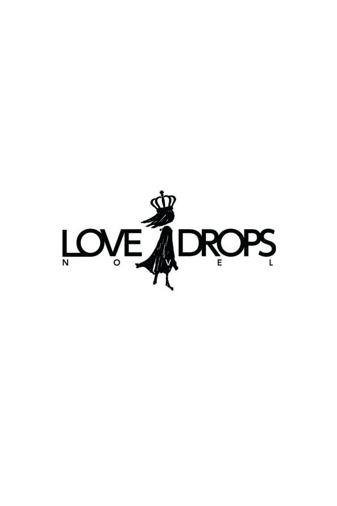

| Secret Romance この愛は罪になる (らぶドロップス) | |
| 御堂志生 | |
| 株式会社パブリッシングリンク (2017) | |

Secret Romance この愛は罪になる
御堂志生
──罪を犯したことがある。
都心の繁華街、夜のイルミネーションを前に 朝 倉 一 樹 はそんな過去を思い出していた。原因はハッキリしている。今、目の前にミニスカートを穿き、肩を剥き出しにした少女が立っているからだ。歳はそう十六、七......。
「ね、おじさん。あたし、フラれちゃったんだ。約束してたのに、三十分も待ってるんだよ。慰めて欲しいなぁ」
一樹は深くため息をついた。
君のしていることは間違っている。少女にそう諭す資格が一樹にはあるのだろうか。こんなとき、彼には機転の利いた返事がどうしてもできない。案の定「ねぇ、おじさん、なんとか言ってよ」と少女に催促される始末だ。
そのとき、横断歩道を渡りながら、手を振るスーツ姿の男が一樹の目に入った。
「朝倉！ 待たせたな」
男は大学時代の友人で平井という。今夜の待ち合わせの相手だ。平井は人混みを抜け、大きな声で一樹の名を呼びながら走り寄ってくる。それを見ていた少女は「あーあ、もういいよ」面白くなさそうにつぶやき、一樹から別の男に興味を移したのだった。
朝倉商事株式会社取締役専務、それが一樹の肩書きだ。祖父の興した貿易商社を、現在は父が跡を継ぎ社長と会長を兼任している。一樹は次期社長として、父の補佐も務めていた。
一樹は四人兄妹の長男として生まれた。二歳下、四歳下の弟と、六歳下の妹がいる。彼は幼いころから会社を継ぐ者として教育され、なんの疑問も持たずに敷かれたレールの上を黙々と歩いてきた。
「相変わらずモテるな、おまえは」
自分がモテない理由は、少し小太りで毛深いからだ。学生時代から何度となく聞かされた愚痴である。だが今日の平井は、一樹のグラスにビールを注ぎながら、愚痴とはほど遠い軽快な口調だった。
平井から電話がかかったのは終業直前のこと。一樹は残業も程々に切り上げ、本社ビルのある横浜から社用車で都内までやって来た。そして、平井に連れて来られたのは、ＯＬに人気のあるスペインバル。店内の洒落た雰囲気に、三十男のふたり組はどうも場違いに思えてならない。
「あの手の少女に声をかけられるのを、モテるとは言わないんじゃないか？ ところで......どうして今日はいつものやきとり屋じゃないんだ？」
大学時代の友人と飲むときは、もう一本裏通りに入った辺りにある、赤提灯の居酒屋かやきとり屋と決まっていた。それが今日は雑誌に載っていそうな店とあっては、どうにも落ちつかない。
「ああ、うん。もうちょっとしたら来ると思う」
「まだ誰か来るのか？」
平井は急用と言っていた。相談ごとならふたりきりだと思っていたのだが......。
彼はそわそわした様子でグラスからビールを一気に飲み干し、その勢いで口を開いた。
「俺さ、結婚することになったんだ」
（......これでまた、両親は見合いを薦めるだろうな）
友人への祝いより先に、そんなことが一樹の頭に浮かぶ。
あとはお決まりのコースだ。二十代半ばのスーツ姿の女性が現れ、平井の隣に座る。そうなったら馴れ初めなどを質問しない訳にはいかない。
平井は鼻の下を伸ばしながら、「彼女に言われて男性用のエステに通ったんだ」と、ツルツルになった肌を見せてくれた。
一樹は真剣に思っていた。この世の中に、結婚の決まったカップルほどはた迷惑なものはない、と。
「朝倉さんくらいカッコよかったら、きっと理想が高いんでしょうね」
「高望みし過ぎなんだよ、コイツは。裏でどんな女と遊んでるのか知らないが、ちゃんとした彼女って紹介してもらったことがないぞ」
「忙しいんだよ」
「広告代理店の営業やってる俺のほうが、よっぽど忙しいさ」
「忙しい？ 部下に手を出した奴に言われたくないな」
一樹の返事に、結婚間近のふたりは顔を見合わせて笑った。
スピーチを頼みたい、そして、挙式予定は十二月だという。今はもう十月半ばだ。急ぐ理由はこの場合、ひとつしか思い当たらない。ウーロン茶を口に運ぶ彼女に、改めてお祝いを言う一樹だった。
一樹はスピーチを快諾し、ふたりと別れてタクシー乗り場に向かった。彼の耳には、別れ際に平井がコソッとささやいた台詞が残ったままだ。
「さっきの子、十代だよなぁ。おまえひょっとして、ああいった子がタイプなのか？」
「馬鹿を言うな。高校生となんて......」
「相変わらず堅い奴。その割に昔っから若い子にモテるんだよなぁ。なんて言ったっけ？ ほら、おまえの妹...... 未 来 ちゃんの同級生。あの子、おまえにベタ惚れって感じだったよな」
「さあ、覚えてないな」「だよな。十五、六の子供相手じゃ犯罪者になっちまうよ」
フィアンセが席を立ったとき、平井が『結婚前に一度くらい女子高生と援助交際がしてみたかった』そんな言葉を口にした。口にするだけで本当にできる男じゃない。そう思ったから一樹も聞き流した。
トン、とすれ違う誰かの肩が当たり......。
ハッとして一樹は頭を振り、顔を上げる。周囲を見回すと、タクシー乗り場を行き過ぎていた。慌てて引き返し、一樹は列の最後方に並ぶ。三人程度ならそれほど待つこともないだろう。
（覚えてない......か。嘘つきめ）
藤 村 瞳 ──その名前をこの九年間、一日だって忘れたことはない。いや、忘れられるはずがないのだ。無垢な処女の顔で一樹に近づき、生涯消せない罪を負わせた十六歳の少女のことを。
◇
今から十三年前、妹がＦ女学院中等部に入学した数日後、自宅に連れて来た少女が瞳だった。家が近くだとわかり、仲よくなったという。
「はじめまして。一樹お兄さん」
紺色のセーラー服を着て、鮮やかな緋色のスカーフが胸もとで揺れていた。新品の通学靴と真っ白なハイソックス。肩で切り揃えられた髪、前髪を縛っていた黒いゴムが妙に印象に残っている。
当時の一樹は大学に入学したばかりの十八歳。十二歳の少女を〝 妹と同じように〟 可愛いと感じていた。
一樹の瞳を見る目が変わったのは、その三年後のこと──。
高校生になった瞳は相変わらず未来と親友で、我が家にも出入りしていた。そして、その夏はとくに暑く......。普段なら友人と外のプールに出かける一樹が、自宅のプールを利用したのがきっかけとなってしまう。
朝倉家の裏庭にはプールがある。長さは二十メートル、幅は三コース分。兄妹が小さいころはともかく、成長するにつれて妹が友人と利用することが多くなった。そういった事情も、男性陣が遠慮する理由のひとつだった。
一樹は大学の四年生で、国立のＴ大学に通っていた。卒業後はアメリカに渡りハーバード・ビジネス・スクールに留学、そこで経営修士号を取るように厳命されている。貿易商社のトップとなり、アメリカを始め諸外国との取引を円滑に進めるには、一目置かれる肩書きが必要だった。
すぐ下の弟、修二は、Ｔ大学に入学して早々に推薦を受け、ハーバード大学入学に向けて渡米した。来期にはスキップで卒業だという。弟に負けるなと父や祖父からハッパをかけられたが......。何ごとも要領がよく、天才肌の修二に一樹が勝てるはずがない。 そんな目に見えないプレッシャーも重なり、一樹は気分転換のつもりで、裏庭に足を向けた。
先に泳いでいたのは一樹だ。あとから妹が、五人の同級生を連れてやって来た。その中に瞳もいた。
「ねえ、一樹兄さん。瞳に泳ぎを教えてあげてくれない？」
瞳は紺色のスクール水着を着て、真っ赤に頬を染め「いいよ。やめてよ」と未来に言っている。一樹は決して敏感なほうではない。だが、瞳が親友の兄......つまり一樹に、憧れ以上の感情を持っていることに気づいていた。同級生の少女らはみんな知っているのだろう。きゃあきゃあ言いながら、瞳を一樹のほうに押し出す。
「ああ、別に......いいけど」
一樹は甘く見ていたのだ。たかが女子高生、十六歳になったばかりの少女など子供に過ぎない、と。
もっと膝を伸ばして、お尻は上げたら駄目だ、張るのは胸でお腹は引っ込めろ。どの動作を取っても、瞳の身体に密着して教えることになる。それはしだいに、一樹の中で拷問に等しくなっていった。
十六歳の少女の肌は、どこもスベスベで柔らかかった。そして、息つぎの練習で顔を寄せたとき、スクール水着の胸もとがよれた。そのアクシデントは、谷間だけでなく桜色の先端まで一樹の目に映ってしまい......。
冷たい水に浸かった部分が一瞬で熱を持つ。早く上がりたいが、少女らの前でそんな下半身を 晒 すことはできない。彼女らがプール遊びに厭きて引き上げるまで、一樹はそこから一歩も出ることができなかった。
一度背中を押されてから、瞳は一樹に対して積極的になる。
「あの......勉強を教えてもらえませんか？」
「未来ちゃんにバースデープレゼントを買うのに、付き合ってくれませんか？」
「クリスマスプレゼントにマフラーを編みました。お願いします、もらってください！」
ことあるごとに一樹の前に現れ、瞳は熱いまなざしで彼を見上げる。
そして一樹は知ったのだ。今の瞳はランドセルを下ろしたばかりの子供ではない。セーラー服の似合う美しい少女に成長していたことに。
大学も卒業式を残すだけとなった二月の終わり──。
その日、家には一樹がひとりで残っていた。どんよりと曇る冬の空からみぞれ混じりの雨が降り始めたころ、瞳が未来を訪ねて来た。妹の留守を聞くと、彼女はそのまま帰ろうとする。だが、今にも泣きそうな様子が気にかかり......一樹は彼女を引き止めてしまう。
リビングは広過ぎてどうも居心地が悪い。話を聞くだけだと自分に言い聞かせ、一樹は瞳を自室に通した。
「両親が......離婚することになったんです。父が......わたしも母と一緒に出て行けって。もう、Ｆ女学院には通えない」
あとから思えば、真冬だと言うのに瞳は恐ろしく短いスカートを穿いていた。しかも、タイツもストッキングもなしで。白く艶やかな太ももが目の前をチラチラして、一樹はそのことばかりが気になった。
このとき、二十二歳の一樹に女性との交際経験は一度もなく......それは童貞を意味していた。弟たちはふたりとも早熟で、なんと中学生のときに初体験を済ませたという。だが、不器用で生真面目が過ぎる一樹は、その機会をことごとく逃してきた。
誰でもいいから早く済ませたい、そんな気持ちには毛頭なれない。まず恋をして、両思いになったあと、お互いの気持ちを確認してから......。
中学生男子でも赤面するような一樹の計画は、十六歳の瞳によって見事に打ち砕かれた。
「一樹お兄さんっ！ わたし、ずっと好きでした。お兄さんは、卒業したらアメリカの大学に留学されるんでしょう？ そうしたら、もう二度と会えない」
瞳は一樹に正面から抱きついた。
呆然と立ち尽くす一樹の腹部に、弾力性のある彼女の胸が押し当てられる。慌てて引き離そうと下を向いたとき、鼻先に彼女の髪が触れた。
爽やかなシトラスの香りが鼻腔をくすぐる。
なんの変哲もないシャンプーの匂いが、一樹には媚薬のように感じた。
「わたし、ずっと思ってきたの......一樹お兄さんに初めての人になって欲しいって。お願いします！ どうか、わたしのたったひとつのお願いを叶えてくださいっ」
「ダメだ、瞳ちゃん。君はまだ十六だろう？ 十八歳未満の女の子とセッ......そういう関係は条例で禁止されてるんだ。だから」
セックスと言葉にしそうになり、一樹は慌てて言い直した。
だが、そんな一樹の目の前で、瞳は服を脱ぎ始めたのだ。
「な、何をしてるんだ！ やめなさい！」
「誰にも言いません。人に知られなかったら平気でしょ？ 絶対に......両親にも、未来にも言わないから」
「そういう問題じゃないんだ。これは......その」
「お願いっ！ お願いです。思い出にしたいの。初めての恋の......十二歳で初めて会ったときから、ずっと一樹お兄さんに恋してたの」
瞳はセーターを脱ぎ、シャツのボタンも全部外してしまった。そしてミニスカートのファスナーを下ろし──直後、ストンとスカートは彼女の足もとに落ちる。
瞳が身につけているのは、純白のブラジャーとショーツ、そして、白いスクールソックスだけになった。
一樹はなけなしの理性を総動員し、懸命に下半身の暴走を押さえようとする。
「頼む......もう、勘弁してくれ......」
それは興奮を押し殺した、掠れた声だ。
このとき、一樹の本心は言葉とは真逆を向いていた。すぐにも瞳に飛びかかり、彼女のブラジャーを剥ぎ取れと心の声が言う。
「わたしが、嫌いですか？ たった一度でもいやですか？ わたし......わたし......」
瞳が涙をこぼした瞬間、一樹の理性を繋いでいた鎖が弾け飛んだ。
一樹の指は羞恥に染まった瞳の頬に触れ、続けて真冬の寒さに震える唇に触れた。そのまま、覆い被さるように唇を重ねる。初めてのキスだ。そう思ったとき、わずかにふたりの歯が当たった。一樹は急いで顔を離したが......。
「嬉しい。初めてのキスが一樹お兄さんで......嬉しい」
少女の潤んだまなざしは、しだいに艶めいた女の色を帯びてくる。
「お兄さんはやめてくれ。一樹でいいよ、瞳」
「いつき......さん」
二度目のキスはもう少し深いものになった。
経験のない一樹でも、舌を押し込むことくらいは知っている。だが実際、キスの最中にそれをするのは、慣れと勇気が必要な行為だった。瞳から口を開けてくれない以上、一樹に割り込む技術はなく......。強く唇を押し付け、ほんの少し瞳の唇を舐め上げるのが、今の彼にできる精一杯のこと。
「いやなら言ってくれ。やめるなら今だよ」
「いやよ......やめないで」
瞳の言葉に背中を押しされ、一樹は彼女をセミダブルのベッドに押し倒す。ベッドカバーと掛け布団を剥いで、ブルーのシーツの上に瞳を寝かせた。
一樹は冷たい指でブラジャーのフロントホックを外す。その瞬間、夏のプールで見つけた桜色の頂が目に飛び込んできた。手足に比べると、下着に隠れた部分は本当に真っ白だ。十六歳の肌はピンと張り詰め、小刻みに震えていた。
（これは犯罪だ。僕は......高校生相手に何をしているんだ？）
一樹の脳裏に警告の赤いランプが灯り、クルクルと回転している。
だが、乳房の先端に唇が触れた瞬間──。
「......あ......っ」
消え入りそうな瞳の声に、一樹の欲情は警告の赤いランプを叩き壊していた。
ふと気づけば、一樹も裸になっていた。
ジーンズとトランクスを一気に脱ごうとしたとき、足がもつれて転びそうになったことは覚えている。靴下を脱ぎ忘れ、恥ずかしくて大急ぎで脱ぎ捨てたことも。
一樹は、固く目を閉じて震える瞳の上にのしかかった。頬から首筋、肩へと唇を這わせ......指を白いショーツの中に忍び込ませる。指先に柔らかい茂みが触れた。一樹はそこを優しく撫で擦る。瞳の身体がビクンと震え......処女をもらって欲しいと言うが、太ももはピッタリ閉じたままだった。
（本当に奪っていいのか？ 瞳ちゃんを傷つけることにならないのか？）
迷いとは裏腹に、一樹の指は茂みの奥まで滑り込み、隙間を探り当てた。彼の指は秘められた部分をこじ開け、進んで行く。そこには女の子の最も敏感な部分が埋もれていて......ゆっくりと人差し指で撫で回した。
「やっ......あぁん、そこは......んんっ」
奥から流れてくるヌメリを辿ろうとしたとき、一樹の指はズルンと飲み込まれた。くぐもった声が瞳の喉から聞こえ、その表情は必死で何かに耐えていた。
一樹の心臓は破けそうなほど鼓動を打っている。そのあとすぐ、白いショーツの奥から、男を誘う水音が聞こえ始めた。
（瞳ちゃんは本気なんだ。本気で、僕に抱かれたがっている）
これは違法であっても強要じゃない。彼女の願いを叶えてやるだけだ。一樹の中にそんな自己弁護が浮かび上がり、彼は矢も盾もたまらなくなった。
一樹は瞳のショーツを剥ぎ取り、太ももをすくい上げた。すると、薄いピンクの花唇が露わになる。それはまるで朝露に濡れた花びらのようだ。
「や......だ。恥ずかしい、見ないで」
一樹の視線を感じたのか、瞳は身をよじる。その瞬間、雫がとろりと滴り、ブルーのシーツに黒い染みをつけた。もう一秒だって待っていられない。一樹はその花の中央に〝 欲情の塊〟 を押し当てた。すでに天井を向いてそそり立ち、先走り液を垂らしている。わずかな我慢もできず、彼は瞳の中に押し込んだ。
「痛っ......痛い！」
「わ、悪い。抜こうか？」
「ダメッ！ 大丈夫です。平気......我慢できるから......最後までしてください」
瞳は目に涙を浮かべていた。
それでも、一樹の腕を掴み、途中でやめさせようとはしない。その彼女の顔を見た瞬間、一樹の胸に温かな思いが溢れ出した。
（愛おしい......守ってやりたい）
ずっと彼女に対して抱いてきた思い。十六歳の少女に対する危険な感情を、一樹は懸命に打ち消してきた。それを今、解き放ち......瞳に愛を込めてそっと口づけた。
この思いが罪だと言うなら、どんな罰も受けよう。
彼は欲望ではなく〝 愛情の証〟 で、瞳の身体を貫いたのだ。障壁を突き破り、奥へ奥へと入り込む。
「瞳......全部、挿ったよ。痛いだろう？ ごめんな」
「ううん。嬉しい......わたし、とっても嬉しいの。一樹さん、大好き」
「ああ、僕も好きだ。愛してるよ、瞳」
「やだ。そんなふうに言わないで......これっきりで会えなくなるのに......忘れられなくなるから」
「これで終わりにするつもりはないよ。ホントはずっと気になってた。何度君を想像して......あ、いや」
十六歳の少女に何を告白するつもりだ、と心の中で自分を叱りつける。
「そんな......わたし、信じてしまいそう、一樹さんのこと。でも」
「信じて欲しい。僕は君を愛してる」
「一樹......さん」
瞳が動いた瞬間、ダイレクトな刺激が下半身に伝わった。
一樹にとっても初めての女性の中だ。しかも処女とあっては、その恐ろしいほどの窮屈さに、そうそう持つはずがない。
「ご、ごめん。ちょっと、もう......」
「一樹さんの好きに動いてください。わたし......あなたに気持ちよくなって欲しい」
少女の思いやりに恥ずかしさを感じつつ。一樹には、やせ我慢をする余裕すらなかった。ゆっくりと動かすつもりが、どうにも堪え切れず、思い切り腰を突き上げてしまう。しかし、それもほんの数回......駆け抜ける快楽に一樹の身体は打ち震えた。続けて強く腰を打ちつけたとき、一樹の分身は瞳の中で爆発する。ソレは激しく痙攣し、すべてを出し尽くすまで止まることはなかった。
終わったあと、瞳はシーツを汚してしまったことをひどく気にしていた。今にもシーツを引き剥がし、持って帰って洗濯する、と言い出しそうだ。そんないじらしい彼女を、一樹は懸命になだめた。
「六月の渡米はやめられない。でも、二年で必ず戻ってくる。そのとき君は十八だ。そうなれば正々堂々と付き合える。電話もする、メールも手紙も送る。帰国したとき、瞳がお母さんと一緒にどこで暮らしていても、必ず会いに行くから。その日まで、秘密の恋で我慢しよう」
目も鼻も真っ赤で、瞳の涙腺は壊れてしまったかのようだ。一樹の言葉にひとつひとつうなずき、微笑む彼女が最高に愛らしい。
「待ってます。どこにいても、何があっても、一樹さんが戻ってきてくれるのを......わたし待ってますから」
一樹は瞳を自宅まで送り届け、別れ際、ふたりは何度もキスをした。人生にこれ以上の幸福はない。これは愛の行為で犯罪じゃない。瞳が短大か大学を出たら結婚すればいいだけだ。
初めての恋に一樹は浮かれ、二月のみぞれの中、彼の心はスキップしていた。
地に足が着かない状態で家に戻り、一樹は自室に向かう。
瞳が気にしていたシーツを処理しておかなければならない。そう思ってドアを開けたそのときだ。
部屋の真ん中に母、絢子が立っていたのである。
「か、母さん。帰ってたんだ......でも、なんで僕の部屋にいるんだよ。悪いけどさ、出て行って」
ほんの一時間前、そのベッドで瞳の処女を奪った。セックス特有の匂いが部屋の中に充満しているようで、どうも落ちつかない。だが、母が手にしている物を見たとき、一樹の心臓は凍りついた。
母はベッドカバーを外し、それを掴んだまま立っていた。その下には、破瓜の血と精液が染みついたシーツがある。お互いの下半身を処理したティッシュもそのままになっていた。
「一樹......あなた、自分のやったことがわかってるの？ 瞳ちゃんはまだ十六歳なのよ！ 未来と同じ歳なのっ」
「わ、わかってる。わかってるって、でも、僕らは本気で好き合って......」
一樹がそう言った直後、母の小さな手が彼の頬を打った。ペチンといった程度で痛みなどほとんどない。だが、母の涙は一樹の胸に堪えた。
「あなたは何もわかってない。あなたは朝倉の長男なの！ 将来社長になる人間なのよ！ もし、藤村さんが警察に行けば......それだけであなたは逮捕されるの！ 本気も遊びも関係なく、十六歳の女の子とセックスしたらそれだけで犯罪者なのよ」
「それは......でも特例があるはずだよ。結婚を前提とした真摯な恋愛の場合は」
「じゃあ、瞳ちゃんと結婚するの？ 留学はどうするつもり？」
「今すぐは無理でも、婚約って形も取れるだろうし......そんな」
「だったらそれを、今すぐお父さんに言いなさい！ 犯罪だと思ってないならできるはずよ！」
その言葉に一樹はグッと詰まる。
母は、息子の中で目を覚ました罪悪感に気づいたのだろう。
「それに、あの厳格なお祖父様やお祖母様がなんておっしゃるか。十六歳の少女と関係したあなたを、許してくださると思う？ そんな人間が社長になって、誰がついて来るの？ こんなこと世間に知れたら......あなただけじゃないわ、家族みんなが白い目で見られるのよっ！ 一樹、本当にわかってるの？」
母は床の上に座り込み泣き始めた。
さめざめと泣き続ける母を見て、一樹は返す言葉もない。いつの間にか興奮は醒め、罪の意識だけが心を占めていく。
「お願いだから、母さんの言うとおりにしてちょうだい。絶対に、あなたにも瞳ちゃんにも悪いようにはしないから」
その言葉にうなずく以外にない、一樹だった。
◇
「えっ......見合い、ですか？」
翌週の月曜日、一樹は本社で社長室に呼び出された。
大学時代の友人がまたひとり結婚することになった。その話を伝える前に、父は見合い写真をデスクに置いたのである。
「もう三十一だろう。結婚の平均年齢が上がっているというが、責任ある立場の人間にとって、妻帯は義務だ。妻も子供もいない男に仕事は任せられない。そういう企業のトップだっているんだぞ」
これまでは母や祖母に、何度となく見合いを勧められてきた。その都度、自分はまだまだ半人前で、と断ってきたのだ。しかし、父を担ぎ出したということは、本気で一樹を結婚させるつもりなのだろう。
一樹は渡された釣書を開き、見合い相手の写真に目を向けた。
国際線の客室乗務員として五年間勤めてきた女性らしい。英会話も得意で、社交性もある。貿易商社である以上、外国人との交際も多い。将来、社長夫人としておまえを支えてくれる女性だ。そんな父の言葉は一樹の耳に入り、反対側から抜けていった。
年齢は二十七歳、写真には振袖姿で写っている。
この女性は一樹の過去の罪を知ればなんと言うだろう。非常識だと罵るだろうか？ あるいは、若気の至りと目を瞑ってくれるかもしれない。
「見合いは今週の日曜日だ。都内のホテルＮで行う。いい加減、祖父さんたちを安心させてやってくれ」
（もう潮時だ。これ以上、瞳のことを引きずるべきじゃない）
「──はい」
一樹は目を閉じると、静かに答えた。
（......はあっ......）
「申し訳ありません。事故で渋滞に巻き込まれてしまいまして」
「え？」
社用車で移動中だった一樹は、いきなり運転手に謝られ、驚いて声を上げた。どうやら、思いのほか大きなため息をついてしまったらしい。
今日はもう金曜日だ。しかし、見合いを了承してからずっと、瞳との初体験を夜ごと夢に見る。おかげで仕事にも全く身が入らない。今日も韓国からの電話に、気がつけば日本語で答えていた。
母はあのあと、卒業式を終えたらすぐアメリカに発つように言った。
『二年我慢しなさい。どんなに頑張っても、ＭＢＡを取って戻って来るまで二年かかるでしょう？』
母に言われなくてもそのつもりだった。だが母は六月では遅過ぎる、そして帰国のたびに会うのも駄目だと言って譲らない。
『瞳ちゃんに会って絶対に何もしないと言い切れる？ 帰国したときにふたりきりで会っても同じことよ』
一樹に『何もしない』と言い切る自信はなかった。あれほどの快楽を知ってしまったのだ。瞳のそばにいて我慢できるほど、聖人君子ではない。
卒業式の直前、母が同行することで、ようやく瞳に会えた。
だが母に知られたことを話すと、彼女は泣き出してしまう。『一樹さんから引き離される。もう二度と会えない』そう言って泣きじゃくる瞳に、二年の辛抱だ、手紙でやり取りだけは許してもらった、母が連絡役になってくれる約束だ、と伝えた。
瞳は、彼女の母親を怒らせたら、一樹が逮捕されると聞き、涙ながらに承知してくれたのだった。
『ごめんなさい。わたしのせいで、ごめんなさい。でも、信じてる。一樹さんのことを待ってるから』
瞳のせいではない。
迂闊にも、十六歳の少女を抱いてしまった、すべては一樹の責任だ。だが、たとえ逮捕されても一緒にいよう、とはどうしても言えなかった。
二年......たった二十四ヶ月。離れ離れになる二年間、一樹が瞳に対して誠実でいれば、神様もたった一度のフライングくらい大目に見てくれるだろう。そう信じていた。
母の目があり、瞳にキスすることはおろか、抱き締めることもできなかった。指先で涙を拭ってやるのが精々で......。ふたりは他人のような握手を交わし、別れたのだった。
（──とんだピエロだな）
「できる限り近道をしたんですが......本当に申し訳ありません」
黙り込む一樹を見て機嫌を損ねたと思ったのだろう。運転手は必死に謝っている。
「ああ、いや。家に帰るだけで、誰が待ってる訳でもない。急ぐ必要はないよ。ため息は仕事の悩みなんだ。気にしないでくれ」
逆に申し訳なさが募り、一樹は運転手に向かって必死に言い訳をしていた。
思わず苦笑いが込み上げ......いっそ、十六歳の少女とのセックスが忘れられないんだ、とでも言ってみようか？ そんな考えが浮かんだ。しかし、実際には口にできるはずもない。そんな自分がどこか情けなかった。
たしかに、会社を出た時間を考えれば随分時間がかかっている。そんなことを考えながら、彼は窓ガラス越し、射し込んでくるオレンジ色の光に目を細めた。
その瞬間──信じられない人物の横顔が目に飛び込んでくる。
「車を止めろっ！」
「え？ あの、まだ」
「何をやってる！ さっさと止めるんだ！」
穏やかな一樹の形相が一変したのだ。運転手もさぞ驚いたことだろう。慌てて、路肩に寄せ停車させた。
「ここでいい。少し歩きたくなったんだ。怒鳴って悪かったね」
そう言うと、一樹はアタフタと車から飛び出した。
髪は、最後に会ったときに比べて短くなっていた。少女らしいふっくらとした頬は、少しシャープな印象に変わっていた気がする。眉も細く整えられていたように思う。水色っぽいストライプの長袖を着て、下はジーンズだった。ほんの一瞬のことで、覚えているのはそれくらいだ。だが、間違いない。あの少女、いや、あの女性は......。
一樹は懸命にさっきの女性がいた場所に駆け戻る。女性が見ていたのは町内の地図だったようだ。あれが彼女だとしたら、なぜこんなものを......。
人違いかもしれない。だが、一樹はどうしても確かめずにはいられなかった。
そのとき、彼はひとつのことを思い出し、再び走り始めた。角をふたつ曲がり、少し細い道に入る。小さな児童公園があり、その横が彼女──藤村瞳の家だ。
忘れることなどできない。この公園の隅に置かれた小さな滑り台の影で、みぞれの降る寒い日に、彼女に口づけた。キスのあと、瞳はアーチ型の門を潜り、小走りで玄関に向かい......振り返った彼女は、花が咲いたように笑ったのである。
そして今、傾いたアーチの前にひとりの女性が佇んでいた。
尾 方 瞳は途方に暮れた気持ちで、壊れかけた門扉に手を置いた。
父の遺産なんて、美味しい話に釣られた自分が馬鹿だったのだ。父が実子でないと疑っていた瞳に、財産を残すはずがない。離婚のときも、邪魔な瞳をさっさと母に押し付け、この家から追い出したくらいである。
瞳は一週間前、藤村の父が亡くなったと連絡を受けた。父は小さいながらも会社を経営しており、土地や不動産、銀行預金などの財産はひとり娘である瞳がすべて相続することになる。行政書士からの手紙にはそう書かれてあった。もちろん一番下に、その中から借入金の返済や滞納された公租公課、病院や行政書士への支払いもございますので......。そんな文章があったことも見落とした訳ではない。
ただ、今の瞳にはお金が必要だった。
母は離婚と同時に、瞳を自分の実家に預けていなくなってしまう。見せかけだけとはいえ幸福な家庭が壊れ、十六年間、父と呼んできた人に『顔も見たくない。出て行け！』と怒鳴られた。通い慣れた学校もやめることになり、友達もひとり残らずいなくなった。
そして恋も......実ったはずの初恋は一瞬で幻と消え失せ、瞳は何もかも失ったのだ。
母が小学生のころに祖父が亡くなり、それからずっと女手ひとつで母を育てあげた。そんな母は高校を卒業してすぐ、都会に憧れ上京。そのまま結婚して横浜に住み、母が祖母を顧みることはなかったらしい。
ところが、絶縁状態に近い祖母のもとに、母はいきなり瞳を置き去りにした。
だが祖母は、それまで会ったこともない孫に優しい言葉をかけてくれた。祖母がいなければ、今の瞳はなかっただろう。
その祖母が病に倒れ、長期の入院が必要になり......。
祖母は心臓が弱っているうえに高血圧だった。七十歳を超えた高齢の祖母に、負担の大きな手術は難しいと医者から言われる。だが、今すぐ危険な状態に陥る訳ではない。充分な栄養を摂り、入院して養生すれば、まだまだ長生きできると言われた。
祖母のためなら、瞳のちっぽけなプライドなどドブに捨てても惜しくはない。
手紙を寄越した行政書士の事務所を訪れると、親不孝な娘だと白い目で見られた。それもそのはず、藤村の父も糖尿病で倒れ、三ヶ月も入院していたそうだ。その間、一度も見舞いに来なかった娘が財産だけ受け取りに来たのだから......。
だが、瞳は父が入院していたことも知らなかった。それに父自身、見舞いになど来て欲しくもなかっただろう。だがそれは、行政書士に言う必要のないことだった。
青銅色のアーチにはアイビーが絡まっていた。薔薇のレリーフが彫ってあり、門扉と一体型になっている。母は庭に構う人ではなかったが、それでも昔はスッキリと整えられていた。今は......雑草が瞳の胸辺りまで伸び放題だ。父は入院以前から、少なくとも丸二年はこの家に住んでいなかったという。
「馬鹿みたい......」
「それは、僕のことか？」
突然話しかけられ、瞳は呼吸が止まりそうになる。しかもその声の主は......。
九年前はもっと背が高かったように思う。いや、瞳がスニーカーを履いていたせいだ。今は、少しヒールのあるパンプスだった。
顔の輪郭は険しくなった、髪型は以前に比べたら長くなった気がする。決定的に違うのはスーツだろう。ダークグレーのふたつボタンにストライプのネクタイを締めている。かつて、一樹のスーツ姿を見たのは数えるほどだ。そして、どこか借り物のようでスーツが浮いていた。でも今は、見事なくらい彼の身体にフィットしている。
一部上場企業の専務──立派な肩書きに相応しい男性になったと言うべきか。とても、十六歳の少女を踏みにじり、その地位を手に入れた男には見えない。
「そんな目で僕を見て、今度は何を手に入れようと企んでるんだ？」
「なんの......ことですか？ わたしに何かご用ですか？」
瞳は声が上ずりそうになるのを必死で抑えた。
「用がなければ、声もかけられないのか？」
「別に。ただ、わたしの前には二度と顔を出さないと思ってましたから」
気を抜くと泣きそうになる。瞳はグッとお腹に力を入れた。
「そんなことが、よく言えたものだ。昔は僕が〝 おはよう〟 と言うだけで、喜んでいたくせに」
「それは何？ 馬鹿な女子高生を戦利品にしたっていう、ロリコン男の自慢話かしら？」
ふたりの間に見えない火花が散った。
数秒後、先に動いたのは瞳のほうだった。
彼女は外れかかった門扉をこじ開け、レンガのブロックに足を下ろす。ガクガクと揺れる部分はあるが、どうにか玄関までレンガの上を歩いて行けそうだ。雑草のジャングルを掻き分けて行くよりマシだろう。
「ちょっと待て。こんな時間から、君はこの家で何をする気なんだ？」
「あなたに関係ないわ。では......ごきげんよう」
その昔、Ｆ女学院時代の挨拶を一樹に返し、瞳は不安定なレンガ道を歩き出した。
「待つんだ！ この家は電気もガスもきてないぞ。水道も止められたままじゃないか。もうすぐ真っ暗になる。君は」
瞳は一樹の声を無視して歩く。だが、彼女が足を置いたレンガが鈍い音を立てて崩れた。
「キャッ！」
九年ぶりの横浜だからと、スーツを着てパンプスなんか履いてこなければよかった。スーツは行政書士事務所から帰ってすぐに着替えたが、靴の替えまではない。
一樹の前で派手に転ぶなんて......瞳はそれだけが悔しかった。
だが、力強い手が瞳の腰を支え、引っ張り上げるように真っ直ぐに立たせてくれた。
「待てと言っただろう。まったく、少しは大人になったかと思えば、見た目だけか？ 耳がないのは昔と同じだな」
驚いて駆け付けてくれたのだろう。わずかだか一樹の呼吸が乱れている。瞳の身体に触れたまま、そんな喘ぐような息遣いを耳にしたら......。
瞳は歯を食い縛ると、仕立てのよいスーツを押しのけ、キッパリと言い返した。
同時に数歩、一樹から離れる。
「そうよ。耳もなければ、脳ミソも足りないの。最初に言ってた馬鹿はわたしのことよ。これで満足？」
「ああ、満足だよ。だが、昔のほうがマシだったな。素直で可愛げがあった」
「いつまでも十六の女子高生じゃいられないのよ。わかったら早く出て行ってくれない？」
「出て行けだと？」
そう言った瞬間、一樹が瞳に向かって一歩踏み出した。
陽はほとんど沈み、辺りには薄闇が広がり始める。一樹の顔にも影が差し、怒りを含んだ声音が必要以上に瞳の心を 脅 かした。
「そ、そうよ。ここは......わたしの父が残した家だもの。さっさと出て行って！」
「助けてもらって礼もなしか？」
「頼んでないわ。あなたの助けなんか！ これまでも、これからも、一切ねっ！」
瞳は思い切り叫んだ。雷に打たれたかのように、九年前の屈辱が彼女の心に甦る。忘れてはいけない。この偽善者の言葉だけは、二度と信用してはいけない。瞳は頭の中で、繰り返し呪文のように唱える。
「じゃあ、あの金はなんだったんだ？ たった十六で、バージンの代金に五百万も手に入れたのは君くらいだろう。いや、君と君の母親と言ったらいいのか？」
瞳は真っ青になった。
だが一樹は、彼女の気持ちなどお構いなしに続ける。
「わずか一回の、大してよくもないセックスの代金としちゃ、破格の値段じゃないか？ もう少しくらい、君に奉仕してもらってもバチは当たらない。そう思わないか？」
一樹は一気に瞳との距離を縮めた。そのまま両腕を掴まれ、彼の顔が近づいてくる。瞳は顔を左右に振り、後ろに下がった。扉の木が腐ってポロポロと落ちて来る玄関に背中を押し付けられ、これ以上は逃げ場がなくなる。
「口止め料──あなたのお母様がそうおっしゃったわ。あなたはあのお金で、自分の犯した罪から逃げたんじゃない！ 違うっ？」
「そうだ」
「そんなスーツを着て、専務様でいられるのは、わたしが〝 あのこと〟 を誰にも言わなかったからだわ！ たった五百万よ。それであなたは......」
「うるさい！ 黙れっ！」
瞳は目を閉じ身体を硬くした。一樹に殴られると思ったからだ。だが、一樹は無言で踵を返し、そのまま瞳の前から消えたのだった。
◇
（あの女、あの女、あの女！）
胸の内で悪態をつくが、それ以上言葉にならない。一樹は吐き気を催すほどの、怒りと憎しみを瞳に感じていた。
「ああ、クソッ！」
持ち帰った仕事もまるで集中できず、文章は間違いだらけだ。さっきから書類の一枚どころか、一行すら進んでいない。明日は土曜日だと言うのに出社することになった。そして明後日は、問題の見合いがある。
一樹は八つ当たりでパソコンのキーボードを殴りつけた。
「ちょっと、一樹兄さん。何騒いでるのよ」
「なんでもない。キーボードが上手く動かないだけだ」
「それって......叩いて壊したって言うべきじゃない？」
妹の未来がやって来て、一樹が放り出したキーボードを持ち上げ「壊れてないじゃない」などと言っている。もちろんそんなことは言われなくてもわかっている。壊れているのはキーボードではなく、一樹のほうだ。
「僕のことはいい。ジンの面倒を見てやれよ」
仁は未来が未婚で産んだ息子だ。ちょうど一歳になる。よちよち歩きを始めた可愛い盛りだった。
少し他の赤ん坊と違うとしたら、この仁が生まれつき金髪であることくらいだろうか。
未来は大学卒業と同時に結婚。相手は一樹の同級生だ。だが一年後、未来の夫は妻の友人と浮気をし、浮気相手が妊娠。未来は黙って身を引いたのだった。
そして、未来の妊娠がわかったのは離婚して二ヶ月後のこと。おそらく、人には言えない事情や葛藤があったのだろう。尋ねたいことは山ほどあったが、一樹をはじめ家族は何も言わず、金髪の家族を受け入れたのだった。
一樹も子供は嫌いではない。休日は甥っ子の父親役を引き受けることもある。そんなときは必ず、「奥様は外国の方ですか？」と聞かれるのだが......。笑ってごまかす一樹だった。
「ジンはジイジとお風呂よ。上がったらバアバが着替えさせてくれるって」
この場合のジイジとバアバは一樹の祖父母のことだ。一樹にはやたら厳しい両親と祖父母だが、未来には甘い。未来の息子には、さらに甘かった。
「だったらなんだ？ 今度の日曜は、ジンの面倒は見れないぞ」
「わかってるわよ。見合いでしょ？」
「明日も無理だ。仕事で」
「そうじゃなくて！ すっごく懐かしい人に会ったの。誰かわかる？」
未来の質問に嫌な予感がした。
「いや......」
「瞳よ、ひ・と・み。三丁目の藤村さんちの瞳ちゃん！ 覚えてるでしょ？」
予想どおりだ。一樹が渋々「ああ」とうなずくと、嬉しそうに再会したときのことを話し始めた。
「名前は尾方瞳になったって言ってたけどね」
「結婚したのかっ!? 」
未来の言葉に、一樹は再びキーボードを叩いて立ち上がった。
兄のあまりの剣幕に驚きつつ、未来は答える。
「だ、だから......両親が離婚して、母親の旧姓になったんだって。なんかね、お父さんの希望だった、とか言ってたかな」
母親の旧姓に戻り、その名前のままと言うことは......。瞳は未婚ということだ。一樹はそのことにホッと胸を撫で下ろした。
「でも、藤村のおじさんが亡くなって、急に相続とか言われて横浜に来たんだって。でも、ほら......藤村産業って倒産したでしょ？ 家も担保に入ってるらしくて。瞳はなんにも知らなかったみたいよ。預金とか債券があるらしいけど、借金のほうが大きいらしくて。兄さんに相談したら、って言ったんだけど......断られちゃった」
瞳は一樹のことが好きだったから、相談に乗ると言ったら喜ぶと思ったのに......。九年前の顛末を何も聞かされていない未来は、無邪気にもそう話すのだった。
九年前、一樹は最初の一ヶ月間、三日に一通は手紙を送った。瞳の転居先もわからなかったため、母の絢子に送り、取りに来た瞳に渡してくれるよう頼んだ。母は快く引き受けてくれ、瞳の落ちつき先がわかりしだい、一樹にも住所を連絡すると言った。
だが、瞳からの手紙は一通も来ない。不審に思った一樹は日本では連休に当たる五月初旬、強引に帰国したのだった。
母は一樹が送ったほとんどの手紙を未開封のまま差し出し、
「初めの何通かは渡せたのよ。でも、お母様と家を出てしまってからは......」
何も連絡がないと言う。しかし、母の態度に違和感を覚えた一樹は、しつこく詰め寄った。そして母が告白したのは──。
「潤子さんに呼び出されて会いに行ったの。そうしたら、瞳ちゃんからすべてを聞いたって言われて。あなたを逃したってひどく責められたわ。母さんも同罪だって、警察に訴えるとまで......」
潤子は瞳の母親の名前だ。
彼女は町内でも有名な、見栄っ張りで派手好きな女性で通っていた。藤村産業の規模に相応しくないほどの大きな家を建て、引っ越してきた。娘を有名私立に通わせ、本人は一流ブランド品で飾り立て、高級エステに通う毎日。若作りで、昼間からホステスのような化粧をしている──それが、ほとんどの人間が答える瞳の母親の印象だ。
離婚の理由も、潤子のホスト遊びが夫にバレたから......。そんな真しやかな噂が町内の住民たちの間に流れていた。
その潤子に知られたとなれば、たしかにとんでもないことになる。一樹はこのとき、逮捕を覚悟したくらいだ。だが、母の話は一樹の想像とは見事にかけ離れていた。
「見逃して欲しかったら慰謝料を払えって」
「まさか、払ったのか？」
「仕方ないでしょう？ 瞳ちゃんが何もかも母親に話してしまったんだから」
「それで......いくら払ったんだ？」
母は百万円と言ったが、それでは納得せず、母名義で銀行から引き出せる全額、五百万円を渡したと言う。一樹は心の底から、母に申し訳ないことをしたと思った。そして、間に挟まれ、さぞ辛かったであろう瞳のことも心配したのだ。
ところが、一樹が見せられた五百万円の領収証には、潤子の名前の下に瞳のサインがあった。
「これはいったい......どういうことなんだ？」
「瞳ちゃんは、あなたが考えていたような子じゃないってことよ。母さん、あなたが可哀想で言えなかったけど」
瞳は潤子の前で、一樹に無理やり、身体を奪われたと話した。『初めてだったのに』そう瞳に泣かれては、母は反論できなかったと言う。
一樹には到底信じられる話ではない。だが、領収証に添えられた念書には『朝倉一樹さんと、私、藤村瞳の間に、性的関係は一切ありません』──それは瞳の自署に間違いなかった。
「潤子さんの噂はあなたも知ってるでしょう？ 瞳ちゃんは彼女の娘なの。母親のやり方を幼いころから見て来たのよ。初体験をお金に換える子だっているの。一樹、お願いだから目を覚まして！」
素晴らしいと信じた体験のすべてを、瞳は金に換えたのだ。母親の潤子に知られて嘘をついたにせよ、唆されて心が揺らいだにせよ。
一樹に残されたものは、罪の意識、ただそれだけだった。
「未来、おまえ......九年前のことを覚えてるか？」
「瞳が転校したときのこと？」
「ああ......普通は転校先の学校とか、新しい住所とか、やり取りするもんじゃないのか？」
「急だったのよ。離婚の話は聞いてたけど、学校はこれまでどおりって言ってたから。それが新学期になって登校したら『藤村さんは転校されました』って。おじさんに聞きに行ったけど、すごい剣幕で叱られたし。携帯は繋がらなくなっちゃったしね」
たしかに、瞳の父親である藤村は、一樹のことも怒鳴り散らした。
あの直後、何も考えられないままアメリカに戻り、ひたすら勉強に打ち込んだ。二年後、弟の修二と一緒にＭＢＡ──経営学修士号を取得して、弟はニューヨークで就職、一樹は帰国した。
帰国して真っ先に向かったのが瞳の家である。成田空港で瞳を見かけた、妹も心配しているので所在を教えて欲しい。そんな偽りの理由をでっち上げたが......。
「俺に娘なんぞおらん！ だらしない母親によく似た、尻の軽い娘がどこに行こうが知ったこっちゃない！ 二度と来るなっ」
藤村には取り付く島もなかった。
それでも諦め切れない一樹は、潤子が出入りしていた店まで当たる。だが、潤子には親しい友人のひとりもおらず。転居先は全くわからなかった。
「でも、結構困ってる感じだったなぁ。だって、何年も人の住んでない家に泊まるって言うんだよ。うちに来ればって言ったんだけどね。鍵はかかるからって......」
朝一番で見に行ってみよう。未来は独り言のようにつぶやいた。
◇
──身体が痛い。目が覚めて真っ先に瞳が思ったのは、そのことだった。
それも当然だろう。まともに使える寝具は毛布一枚しか見つからなかった。布の破れたソファにバスタオルを敷き、瞳はその上に丸まって眠った。いや、うとうとしただけと言うべきか。
とにかく、あと数日ここに泊まるのであれば掃除が必要だ。それに電気と水道も。一樹が口にしたガスは必要ない、この家はオール電化住宅なのだから。もちろん、そのシステムが壊れていなければ、の話だが。
公園の水道から拝借した水でトイレを流し、瞳はため息をつく。
一日も早くすべてを済ませて、祖母のもとに戻ろう。真っ黒に汚れた鏡の、顔が映る部分だけをせっせと拭き、瞳は自分の顔をジッと見つめた。
ファンデーションと口紅......両方とも百円ショップで買った物だ。ここ数年、安い量販店以外で洋服など買ったことがない。髪も肩くらいの長さで、いつも自分で毛先を揃えている。
自分がどれほど冴えない顔をしているか、この町に戻って来てよくわかった。偶然にも数人の中学時代の友人に会ったが、みんな美しい女性になっていた。とくに一樹の妹、未来は格別だ。実にあっけらかんと「離婚して子供を産んだの」と話しつつ、それでも幸せそうだった。
（こんな顔で、一樹さんに会いたくなかったのに）
神様に恨み言を言いかけたとき、玄関の外から複数の人間の声が聞こえてきて......。
「......ソーラーや給湯器はちょっと。でも、通常の電力は大丈夫だと思いますよ」
そんな声に瞳は慌てて外に飛び出した。
「お世話になります。東京電力から来ました。電気はすぐに使えるようにしますので。漏電のチェックや機器の点検をしたいのですが。よろしいですか？」
首から電力会社の身分証明書を下げ、瞳に向かってニコニコと笑顔を見せる。たしかに、電気と水道を使えるようにしなければと考えていた。だが、どこにも連絡はしていないはずだ。
「あの......どうして？ 行政書士事務所の方が連絡してくれたんですか？」
瞳が尋ねると、
「僕が連絡した。未来に聞いたんでね」
そこに立っていたのは一樹だった。
スーツ姿だが、昨日に比べて幾分ラフな格好だ。インナーが黒いワイシャツでノーネクタイのせいかもしれない。ブラウンのツイードスーツは一樹を実際の年齢以上に見せていた。
「どうしてそんな、勝手なことをするんですか？」
「君がどうかは知らないが、僕の妹はかつての親友が困っているのを、黙って見過ごしたりはしない。お化け屋敷のような家に、寝泊まりすると言うのをひどく心配してたんだ。だから、僕が代わりに来た。ちょうど......土曜で仕事が休みだったからね」
一樹はひと息に言うと、つかつかと家の中にまで入ってきた。しかも、玄関で靴を脱ぐこともなく、土足のままリビングまで行く。
「ちょっと！ ここは日本よ。玄関で靴を脱いでちょうだい！」
「表の道路よりひどい床を、靴下で歩けだって？ 第一、君も靴のままじゃないか」
ためらう電力会社の人間に、「そのまま上がってくれ」と一樹が命令する。まるで我が家のようだ。
直後、リビングのシャンデリアが数回瞬き、灯りを点した。蝋燭球は八個のうち三個しか点いていないが、ないよりマシだろう。ほんの一週間程度とはいえ、ホテルに泊まるようなお金はない。それどころか、この相続問題を片付けるために、余分なお金がかかりそうなのだ。
「ここで食事をしようと言う気にはならないな」
一樹は憮然とした顔でつぶやいている。
「それはよかったわ。じゃあ......」
もうお帰りください、そう言おうとしたときだ。
「朝食は外にしよう。君には着替えも必要だな。十時になれば店も開くだろう。あとは彼らに任せて、僕らは行こうか」
「......あなたの言ってる意味がわからないわ」
「必要なのは漏電のチェックだけじゃない。調理器具、給湯器辺りが使用可能かどうか、点検には時間もかかるだろう。その間に朝食と買い物を済ませたほうが利口だ。水道局にも連絡済みだよ。不在でも栓を開けておいてくれるそうだ」
「いない間にチェックが終わったら？ 無人で鍵もかけずに放っておけって言うの？」
「ストップ！ この家に、盗まれて困るような物があるのか？」
悔しいが一樹の言うとおりだ。だが、それをなぜこの男に指摘されなければならないのか。
瞳は唇を噛み締め、クッと顔を上げる。
「わたしは今から着替えるのよ。どうしても、わたしと一緒に朝食が取りたいなら、表で待っていてくださらない？」
精一杯気取って言い返した。
◇
グレーに細い白のストライプが入ったジャケットと膝丈のタイトスカート。インナーはオフホワイトのカットソー、ベージュのストッキングに昨日と同じ黒のパンプスを履いている。
どこからどう見ても、通販で売っていそうな廉価スーツだ。決して谷間が見えるようなセクシーなデザインではない。だが......腕を伸ばすと胸の形がくっきり見え、椅子に座ればヒップのラインが艶めかしく弧を描いた。
一樹は瞳が身体を動かすたび、気持ちを切り替える必要に迫られた。
（朝っぱらから......ファミレスで......何を考えてるんだ！）
目の前に瞳がいる。それだけで、一樹の神経はスイッチが入ったように敏感になっていた。言うことを聞かないムスコを心の中で叱りつつ......。
瞳がフォークでサラダを口に運び、唇についたドレッシングを舌で舐め取った瞬間──彼はトイレに向かうべく立ち上がった。
「だから、必要ないと言ってるんです」
「スーツ一着では不都合だろう、と言ってるんだ」
「わたしは構わないって言ってるでしょう！」
一樹と瞳はしばし睨み合う。
大型スーパーの中、婦人服売り場で先ほどから繰り広げられているバトルだ。店員はほとほと困った様子で立ち尽くしている。
一樹には瞳の気持ちが全くわからなかった。わずか一万円にも満たないスーツである。当座の着替えにと一樹が勧め、支払おうとした途端、瞳は怒り始めた。
朝食を取ったファミリーレストランでもひと悶着あったのだ。千円程度の食事代金を、瞳は割り勘にすると言って聞かない。割り勘は店に迷惑だからと瞳に支払ってもらい、代わりに一樹がランチを奢るということで話がついた。彼にすればランチの確約が取れて、ホッとひと息だ。
瞳には『土曜は休日だ』と言ったが......。
会社には急病と連絡し、休みを取った。結局、書類は出来上がらず、出社しても仕事にはならないだろう。入社して以来、有休も取らずに働いて来た。将来の社長として当然のことだと言われて来たが、いい加減休んでもいいころだと思う。
昨夜、未来と話をしたあと、一樹は朝が待てなかった。瞳のことが気になって、夜のうちに家を抜け出したのである。そして藤村邸の隣にある公園で夜明かしをした。
瞳が一樹を好きだったのは紛れもない事実だ。そのことは未来も知っている。あの初体験を金に換えたことは許せないが、当時の彼女は十六歳。母親に知られ、押し切られたら『違う』とは言えなかったのかもしれない。瞳があのときの行いを反省して、今でも一樹を好きだと言うなら......すべてを水に流そう。一樹はそう決めた。
だが素直に認めるなら、一樹自身が瞳を忘れられずにいたからだ。もう一度、彼女を抱くためならどんなことでもしようと思える。九年経っても色褪せないほど、一樹は瞳を愛していた。
そうなれば、急がなければならない。明日は見合いだ。一樹は今日中に、瞳との結婚を決めるつもりでいた。
「今日明日にも、新しいスーツが必要になるかもしれないだろう」
「なりません！」
「......済まないが、これを包んでくれ」
「一樹......朝倉さん！」
「君じゃない！ 未来へのプレゼントだ。僕が誰に何を買おうと、君には関係ない！」
瞳はプイと横を向き、口を噤んだ。
（......今日中には、無理かもしれない）
絶望的な気持ちで、クレジットカードを店員に渡す一樹だった。
ふたりが藤村邸に戻ると、そこはまるで別世界になっていた。
もちろん、痛んだ門扉や雑草のジャングルがなくなった訳ではない。だが、リビングとキッチンの光景は、九年前に戻ったかのようだ。一樹がハウスクリーニングを頼み、この二ヶ所を重点的に磨き上げてくれたのである。
「君はまた、僕に噛み付くつもりかもしれないが......。あんな環境に、君を置いてはおけなかった」
大人びた横顔、今の一樹に少年の面影はない。
瞳には不思議でならなかった。どうして大して綺麗でもない、見るからに貧乏人の瞳をこれほど構ってくれるのか。思い当たることはひとつだ。あのとき、一樹が〝 瞳たち〟 にした仕打ちを、今になって反省しているのだろう。
（この人を、許すことができる？ わたしは許したいの？）
「どうして？ どうしてこんなことするの？」
「言っただろう？ あんな場所で眠れる訳がない」
「違うわっ！ そうじゃなくて......わたしに言うべきことがあるでしょう？」
何よりも大事な言葉があるはずなのに。一樹はそのことには一切触れようとしない。
「それは......九年前のことか」
「ええ、そうよ」
一樹は小さくため息をついた。
「そんなに、僕を責め立てたいのか？ 罪は僕だけのものか？」
「じゃあ、わたしだけのものなの？ どうしてあなたは平気でいられるの？ 何もなかったような顔をして。胸は痛まないの？ ひどいことをしたって思ってないのっ!? 」
瞳は興奮して一樹の両袖を掴む。
その直後、一樹の視線が足もとに向いた。そして同時に、黒い影が瞳の左足の上を走り抜けて行った。
「きゃあっ！ いや、いやよ。何？ いやぁっ」
「落ちつけ......もういない。もう走り去ったから」
「いるわっ！ いるのよ。いやなの。嫌いなの......あれだけはダメなの」
「大丈夫だ。僕がいる。僕がそばにいるから」
そんなつもりはなかった。本当に。床に足を置いたままが、どうしても嫌で......。瞳は無意識のうち一樹の肩に手を回し、抱きついてしまった。ハッとした瞬間、一樹の顔が目の前にある。
直後、止める間もなく、瞳の唇は奪われた。
（ダメよ。彼から離れなきゃ）
心は叫ぶのに身体は動かない。瞳は唇を一樹に許し、その手が背中に触れることも許してしまった。どれほどしっかり築き上げた防波堤も、一ヶ所崩れ始めると脆いものだ。 緩く背中に回った彼の手が下に向かい、ギュッと瞳の腰を抱き締めた。そのまま、一樹は何度も瞳に口づけを繰り返す。啄ばむようなキスから、しだいに一樹の吐息は荒くなり、それは瞳にも伝染した。押し込まれた一樹の舌を、拙い仕草で瞳は懸命に受け止める。片時も唇を離したくない。
瞳の胸に長く抑え続けた渇望が込み上げた。
高校一年のとき、瞳は初めてマフラーを編んだ。ごくシンプルなメリヤス編みで、端に一樹のイニシャルの編み込みをした。本のとおりにしたつもりがクルクル丸まってしまい、かなり焦ったのを覚えている。所々毛糸の飛び出したマフラーを、一樹は笑って受け取り、ちゃんと大学に巻いて行ってくれた。
バレンタインのときもそうだ。中等部の三年間、瞳は未来と一緒にチョコレートを作り、一樹に渡していた。でも九年前は......思い出すのも恥ずかしいが、ハート型のチョコレートケーキを作って一樹に贈ったのである。
一樹は初めて会ったときから、他の男性とは比べ物にならないほど素敵で優しかった。彼は、瞳が一人前の女性に成長するのを待ってくれている──と、本気で信じていた。今ならわかる、あれは少女期特有の勘違いに過ぎなかった。
『わたしが高校を卒業したら、もう一度会ってください』
そう伝えればよかったのかもしれない。でもあのときは、この世の終わりが来たような錯覚に囚われていた。瞳のすべてをもらって欲しい。彼女はまるで押し売りのように、一樹の前に身体を投げ出した。
まさか、この世の終わりの先に、地獄が口を開けて待っているとも知らず......。
「瞳......瞳、悪かった。僕を許してくれ」
唇が自由になり、その代わり、首筋に焼けるような熱さを感じた。
その直後、一樹の謝罪が耳に届いたのだ。瞬く間に、瞳の胸に愛が甦った。謝って、心から詫びてくれるなら。
「お互いに若過ぎたんだ。九年前のことは何もかも忘れて......もう一度ここから始めよう」
──その瞬間。
瞳は我に返った。必死になって一樹の胸を押しのける。よろけるように彼から離れ、呼吸を整えた。
「どうしたんだ、急に？」
「帰って」
「待てよ。たった今、僕らはわかり合えただろう？ 君もキスに応えてくれた。まさかこれも......僕が無理やりと言うつもりか」
「忘れる？ 忘れるですって？ 忘れられる訳ないじゃない！ あなたは最低よ。男のクズだわ！ 帰って、二度とその顔を見せないで！」
愛を感じ、再び信じようとした自分の愚かさに、瞳は気が狂いそうだった。
◇
だが、一樹にすれば訳がわからない。
昔から虫の嫌いな少女だった。いや、嫌いというより怖い、そう聞いた気がする。抱きついたのがワザとだとは思いたくない。キスはたしかに一樹からだった。だが、彼女も舌を絡め応えてくれたのだ。
結婚となれば、一樹の母が難色を示すかもしれない。だが、十六歳の少女が母親に唆されたあやまちを、いつまでも咎める母ではない。話せばわかってくれる。今となっては、九年前のことは忘れるのが一番だ。なのに、瞳は急に怒り始めた。
（僕に淫行の罪を忘れるなと言いたいのか？ やっぱり、愛はなかったのか？）
一樹が口を開こうとした瞬間、瞳の携帯から着信メロディが流れた。なんの曲かわからないが、可愛らしい音楽だ。出会ったころの瞳によく似合いそうな......乙女チックな趣味は変わっていないらしい。
瞳は携帯を掴むとキッチンのほうに、小走りに向かう。
立派な行動ではないが......一樹はどうにも気になり、彼女のあとを追いかけた。
『そう......そう、よかった。え？ ううん、なんでもないから心配しないで。ごめんなさい。少しでも早く済ませて帰るから......。ひとりで寝るのは寂しくない？ ......そうよ、寂しいわよ。早く帰りたい......』
一樹は瞳の優しい声を青褪めた表情で聞き、音を立てずキッチンの壁から離れる。
彼女が今、母方の祖母と岡山で一緒に暮らしていることは食事中に聞いた。祖母の具合が悪く、入院費用の足しにできればと父の遺産を受け取りに来たことも。だが、肝心の遺産は負債のほうが多く、相続放棄の手続きをするなら十数万円かかると行政書士に言われたらしい。瞳には言わなかったが、もう一度資産総額の確認をして、必要な手続きはすべて一樹が手配しようと考えていた。そして、彼女の祖母の入院費用も、一樹にできる限りのことをするつもりだった。
電話の相手は男に違いない。そう思うと、はらわたが煮え繰り返る気分だ。九年間も瞳のことだけを思い続け、ただの一度も他の女性に近づかなかった自分が惨めでならない。
──カタン。
背後で物音がした。だが、振り向く気概すら出て来ない。
「まだいらしたんですか？」
「......うっかり忘れてたよ。君がバージンすら売り物にできる女だってことを。ああ、思い出した。藤村のおじさんが生前言ってたな。『だらしない母親に似た尻の軽い娘』ってね」
瞳は頬を真っ赤に染め、先ほどの怒りが甦ったように言い返してきた。
「へぇ。じゃ、このことは話した？ 尻軽のお嬢さんの上に、最初に乗ったのは僕ですって」
一樹は怒りのあまり、舌がもつれそうになる。
「僕......僕とキスしたのは......ひとり寝が寂しかったからか？ 君は今の恋人を裏切り、横浜にいる間、僕と恋の駆け引きを楽しむつもりだったんだろう!? 最低の女だ！」
「自分はどうなの？ 未来に聞いたわ。明日お見合いですってね」
「それがなんだ？ 見合いは明日で、今は会ったこともない女だよ。君とは違う」
「たった一度で五百万は払い過ぎだから、見合いで結婚を決める前に、一回でも回収しておこうと思った訳？ なんて計画的なの、あなたらしいわ」
瞳は薄らと涙を浮かべながら、それでも挑戦的な言葉を口にしつつ一樹を睨んでいる。
一樹は九年前のことは言うまいと心に決めて、再び会いに来た。何度も何度も蒸し返そうとするのは瞳のほうだ。
「いい加減にしてくれないか？ 君は真実を知ってるはずだ。僕は強引に奪ったんじゃない。君が捧げてくれたものを受け取った。たしかに、受け取ることは罪だと知ってたよ。昨夜......大してよくもなかったと言ったのは嘘だ。最高だった......素晴らしい贈り物だったと思っている。頼むから、これ以上九年前の思い出を汚さないでくれ！」
午後の陽射しがピカピカになった窓から射し込んだ。少し開いた窓から、十月の風が吹き込んでくる。あちこちが破れ、薄茶色に染まったレースのカーテンがひらひらと揺れていた。
一樹は切なさに胸が引き裂かれそうだ。瞳には恋人がいる。それを知っても、なんとかして横浜に引き止めたいのが本心だった。
「そうね......お母様のスカートの下に隠れていたあなたにとっては、綺麗な思い出なのよね。わたしにとっては地獄の日々だった」
「僕がマザコンだと言いたいのか？ それとも母を恨んでるのか？ 息子を犯罪者にしたくなくて、君たちに金を払っただけだ。当然の親心につけ込んだのはそっちじゃないか。僕が親なら、きっと同じことを......」
「言わないで！ あなたに親心なんて語る資格はないわ！ 誰とでも見合いをするといいわ。あなたがもし、結婚して子供を持ったら......一生呪ってやる！」
そのあまりの剣幕に一樹は唖然とした。
「......君はまともじゃない。何か誤解してるんだ。そうでなければ、疲れてるんじゃないのか？」
「誤解してないわ。疲れてもいない。──帰って」
一樹はため息とともに首を振り、玄関に向かう。
「朝倉さん。かかった費用はちゃんとお返しします。請求書を送ってください」
「......わかった。好きにしてくれ」
いつも目の前にいて、いつでも手に入りそうな少女だった。
瞳と再会したとき、一樹は彼女と過ごす人生を当然のように思い描いた。たくさんの恋も経験もいらない。お互いだけを知っている、そんな古い物語のような関係でもいいじゃないか、と。
人生のおよそ三分の一、胸に抱き続けた恋情に、一樹は幕を下ろしたのだった。
◇
「まったく！ 一樹はどこに行ったんだ。奴は社長になるという自覚があるのか？」
会長兼社長の職にある夫、朝倉総一郎が、土曜出勤から戻るなり悪態をついた。
「どうされたんです？ 一樹ならあなたより早く仕事に出ましたよ」
「急病だと連絡があったらしい。だが、嘘に決まっとる。明日の見合いに不満があるんだろう。いやならいやとハッキリ言えばいいんだ。それを、姑息な真似をしおって」
絢子は夫をなだめながら、どうして一樹はそんなに結婚を嫌がるのだろうか、と考えていた。一樹は非常に真面目な性格で、会社と自宅の往復がほとんどだ。思えば、ガールフレンドのひとりすら家に連れて来たことがない。
九年前のあの事件を除いて......。
「あ、未来。お兄ちゃんは帰って来てる？」
「ううん。ひょっとしたら......帰って来ないかもよ」
未来は楽しそうに口にする。だが、母親としては聞き捨てならない台詞だ。なんといっても明日には見合いを控えている。
「何か知ってるの？ 明日はお見合いなのよ。そんな前日になって」
「仕方ないわよ。昨日再会したんだもの。今度は上手くいって欲しいなぁ」
「誰のこと？ 未来......あなた、何を言ってるの？」
「お母さん、藤村瞳ちゃんって覚えてる？」
その名前を聞いて、絢子は真っ青になった。
夜十時、理由をつけて家を抜け出した絢子は瞳の家に向かった。いきなり呼び鈴は鳴らさず、こっそり中の様子を窺う。
一樹はまだ家に戻ってはいない。おそらく、ここにいるのだろう。彼は九年前の真相を知ったのだろうか。瞳はすべて話してしまったのか。絢子にとって、それは最悪の事態だった。
九年前、絢子は一樹に嘘をついた。
大事な長男が、まだあどけなさの残る少女とセックスしたと知ったとき──彼女は天地がひっくり返るほどの衝撃を受けた。
真摯な交際であれば罪に問われるケースは少ないという。だが、一樹には何かと厳しい夫や舅が、そんな不道徳を許すはずがない。ただでさえ、一樹より修二の優秀さが目立ち始めたころだった。後継ぎを次男にしようと言われたら......。
もちろん修二が可愛くない訳ではない。だが幼いころから手がかからず、独立独歩の道を歩む次男坊に、なんとなく距離感を持っていたのも事実だ。三男の元基もいたが、彼は放任主義で育ててきた。今さら後継者と言われても、本人もどうしていいかわからないだろう。やはり、一樹の名誉は何があっても守らなければならない。
若いうちの二年間は長い、一万キロはふたりを引き離すのに充分な距離となる。
鷹揚に見える一樹も、さすがに逮捕の言葉には焦ったようだ。直接連絡を取り合い、ふたりの関係が疑われるようなことはやめなさいと言えば、素直に従った。
三日と空けず届く一樹の手紙を、絢子は隠匿する。そして瞳には、絢子の名前を使い手紙を送るように伝え、偽の住所を教えたのだ。手紙はすべて差し戻された......そう、絢子の手もとに。
レースのカーテンの隙間から、瞳の姿が垣間見える。どうやら、一樹はいないらしい。そう判断した絢子は、玄関に向かい歩き出した。
◇
またもや思いがけない人物の来訪に、瞳の心は沈む一方だ。
「ペットボトルのお茶くらいしかないんですが......」
一樹の頼んでくれたハウスクリーニングのおかげで、絢子を通すスペースがあったことにホッと息を吐く。だが、絢子はそれどころではなさそうだ。
「一樹とは二度と会わない約束よね？ それなのに、またあの子に近づくなんて......お母様はどこにいらっしゃるの？」
絢子は今度も母と話をつけようと思っているらしい。
「母はおりません。あれ以来、一度も連絡はありませんから、どこにいるのかもわかりません。それに、訪ねて来られたのは一樹さんのほうです」
一樹に会いたい気持ちはあった。町内の地図を眺めていたのも、朝倉の家を見ていたのだ。未来に『兄はまだ独身よ』と聞いてからは余計にそう思った。会いたい、会いたいと思っていたら、一樹に声をかけられたのだ。
「未来と色々話したそうじゃないの。あの子はなんにも知らないから、喜んで橋渡しをしたでしょうね」
「未来さんと会ったのも偶然です。人聞きの悪いことをおっしゃらないでください」
瞳がキッパリと言い返すと、絢子は決して息子には見せない意地悪そうな顔で笑った。
「随分ハッキリとおっしゃるようになったわね。お母様にソックリだわ。言っておきますけど、息子には縁談があるんです。ひょっとして、それを知って近づいてきたの？ 五百万円も渡したのに、まだ寄越せって言うの？」
瞳はカッとして怒鳴り返した。
「わたしが言ったんじゃないわ！ お金の相談も何もかも、あなたと母が勝手に決めたことじゃないですかっ！」
「仕方がないじゃないの。息子の罪の証を消すためですよ！ お母様と話すよりなかったから」
「わたしの子供を〝 罪の証〟 なんて言わないで！」
九年前、たった一度の関係で瞳は妊娠した。
あの二週間後、卒業式を終えてすぐ、一樹はアメリカに旅立った。例えようのない寂しさを抱え、瞳は桜の時期を迎える。
両親が学費を払ってくれず、彼女はＦ女学院から退学を余儀なくされ......。とりあえず、母親は市内にアパートを借り、瞳は母と一緒に藤村の家を出た。しかし、離婚の慰謝料や生活費、瞳の養育費など、金銭的な話し合いが決裂し、父は離婚を調停まで持ち込んだ。
そんなとき、瞳は自分の体調の変化に気がついた。それは考えれば考えるほど恐ろしい現実で......。しかも、一樹からの手紙は一通も届かない。
不安のどん底にいた瞳は、一樹の母、絢子を訪ねる。だが、妊娠のことを口にする勇気はなく......。
ところがその二日後、瞳は母親に同行するように言われた。行き先は、ふた駅も離れたビジネスホテルの個室。そこには、厳しい顔をした絢子が待っていた。
『息子の子供だと認める訳じゃありません。ですが、世間には......うちに出入りしていたお嬢さんとの関係を疑われるかもしれません。一樹はうちの後継ぎなんです。たとえ疑いでも、あの子の人生に傷をつける訳にはいかないんです』
絢子は表向き、決して瞳と一樹の関係を認めようとはしなかった。だが、瞳の母もその辺はわかっていたようだ。見舞金として百万円、それとは別に中絶にかかった費用はすべて負担する、という絢子の申し出に、潤子はすべて込みで一千万円と吹っかけたのである。
だが、絢子もさすがに即答はできず『夫に知れたら、こう言った決着は望まないはず』と言い始めた。絢子が誰にも知られずに動かせるのは五百万円が限界と言われ、潤子もそれを了解する。
瞳の母は金を受け取ると念書と領収書にサインをした。そして、勝手に中絶を約束したのだ。瞳がサインをしたのもそのとき──。双方の母親に詰め寄られ、十六歳の少女にどんな抵抗ができるだろう。
『一樹さんは？ 一樹さんも呼んでください。お願いします。一樹さんと話をさせて』
『瞳さん。わたしがここにいるのが、何より一樹の意思だとは思わない？ あなたが妊娠を伝えたのは一樹だけじゃないの？』
その返事に瞳の愛は鼓動を止めた。
妊娠に気づいてから、何度も手紙にそのことを書いた。──どうしたらいいかわからない。すぐに戻ってきて、助けて欲しい。迷惑をかけてごめんなさい、お願いだから嫌いにはならないで。
だが、一樹は戻らなかった。そして、彼の母親が瞳の目の前にいる。
『瞳さん、ごめんなさいね。でも、男性にはそういうときがあるの。悪いことは言わないわ、今回は言うとおりにしてちょうだい。そうでないと、一樹は日本に連れ戻され、警察に逮捕されるのよ。妊娠なんて、有罪ですって言ってるようなものだわ。あなた、一樹のことが好きだったんでしょう？ お願いだから、あの子を前科者にしないで』
瞳は選択肢のない状況に追い込まれた。
「どちらにしても、あなたとお母様はサインをしてお金を受け取ったの。二十二歳の一樹が犯したあやまちは、すでに償い終わってるんです。九年も昔のことを今さら......」
絢子はバッグから封筒を取り出すと、瞳の前に置いた。
「たしか、お母様のご実家は岡山だったかしら。交通費にでもなさってくださいな」
まるで野良犬に残飯を投げ与えるような扱いだった。そうでなければ、瞳がゆすりに来たと言わんばかりで......。
瞳は立ち上がると封筒を持ち、絢子に突き返した。
「こんなものいらないわ！ あなたの大事な息子さんに伝えてください。わたしはいつまでも馬鹿な十六歳の小娘じゃないんだから、物欲しそうに周囲をうろついても、二度と美味しい思いはできないってね！」
絢子を追い出し、蝶番がガタガタして今にも壊れそうな玄関扉を思い切り閉め......瞳は泣いた。
一樹を誘惑したのは瞳だ。服を脱ぎ、初めての人になって欲しいと頼んだ。現実など何も見えない、浅はかな恋心だった。
だが、それがどれほどの罪なのだろう。
父は母から娘の妊娠を聞き、穢らわしい者でも見るような目つきで瞳を見ていた。そんな娘の存在を消し去るように、父はすべての権利を母に押し付け、母は父からお金をもぎ取った。
母はどうせ引っ越すのだからと、瞳を近所の産婦人科に引っ張って行った。そのため、引っ越すまでの数日間、瞳は周囲の好奇な目に晒された。
『簡単に身体を許したおまえが悪いんでしょ。恥ずかしい真似をしたのは自分自身なんだから、反省なさい』
母は十六歳で妊娠した娘を容赦なく叱り飛ばした。
だがその母も、瞳を岡山の祖母に預け、若い男と姿を消したのだ。父が払った養育費も、絢子から受け取った五百万円もすべて母が持ち去った。瞳が手にしたのは中絶費用として渡されたわずかばかりのお金。
祖母のもとで絶望を抱えて過ごした日々は、九年経っても忘れられるものではない。
瞳は玄関の扉を叩き、嗚咽を上げて泣きじゃくった。
十六歳で一樹を誘惑した報いはこんなにも受けている。なのに、一樹は瞳を責めるのだ。こんな不公平が許されていい訳がない。
一樹にも同じ思いをさせてやりたい。
（ゴミのようにわたしを捨て、虫けらを殺すように我が子の中絶を望んだ。あの男が犯した罪も、白日の下に晒してやる！）
瞳の心に憎しみの火が点いた。かすかに残った愛は、しだいに燃え盛る憎しみの炎に覆われていった。
◇
「鈴井瑞穂さんはね、Ｎ女子大を優秀な成績で卒業されて......」
日曜日の午後三時、千代田区内にある老舗のホテルまで一樹は両親とともに来ていた。一樹と父はいつもと変わらぬスーツ姿だ。母は落ちついた色合いの江戸小紋に綴れ織の名古屋帯を締めている。
見合いといっても仲介人はいない。母親同士に親交があるらしく、まずはホテルのロビー階にあるカフェで、お茶を飲みながら挨拶をしようということだった。
そうして現れた女性は、見合い写真は振袖だったが、今日はクリーム色のワンピースを着ていた。髪は肩より少し長く、緩くウェーブのかかった茶髪。スレンダーで見るからに頭のよさそうな女性だ。
女性の父親は好人物に見えるが気が弱そうで、母親は逆に押しが強く厚かましそうに見えた。最初の挨拶で、「ひとり娘なので本当は婿に欲しい」と言い出したくらいだ。父は面食らったようだが、それでお開きなるほど甘くはなかった。
だが、一樹には母の絢子が瑞穂の母親のどこを気に入り、意気投合したのか甚だ疑問だ。
「......さん。一樹さん！ 聞いてらっしゃるの？」
「え？ ああ、はい。なんですか？」
「ご趣味は何かとお尋ねでしょう。しっかりしてちょうだい！」
母は愛想笑いを正面に座った女性ふたりに向けながら、一樹には鋭い声で言った。
「趣味は......映画鑑賞といいますか」
「まあ、私も好きです。映画館に行く時間はなくて自宅で観ることがほとんどですが。映画館の日本語字幕も邪魔で、吹き替えも嫌いなんです」
どうやら、暗に英語はペラペラだと言いたいらしい。
「そう、ですか。僕は日本語のほうが落ちつくので」
一樹の返事にテーブルの周囲に冷たい風が吹き抜ける。母は慌てて、「仕事で外国語を使うことが多いせいかしら」などと、フォローに必死だ。
「最近ではどんな作品をご覧になりまして？」
今度は上手く答えろと母の視線が言っていた。甥っ子と一緒に『アンパンマン』や『機関車トーマス』を観たと言ったら、ヒステリーを起こしそうだ。だが本当のところ、ここ数年まともな映画など観たことがない。覚えているのは......。
「『ノッティングヒルの恋人』とか『二十五年目のキス』なんかでしょうか」
「ラブロマンスがお好きなんですね。でも十年以上前の作品じゃなかったかしら？」
「正直に言うと、大学時代に観たのがほとんどです。ここ最近は忙しくて」
「じゃ、大学時代はロマンス好きな女性とお付き合いされていたんですね」
妹にねだられ、よく映画に付き合った。そのときは必ず瞳も一緒で......。彼女も恋愛映画が大好きだったように思う。
「妹が......好きだったんです。一度ホラーを観に行ったときは館内で泣き始めて」
それも瞳だ。未来は絶対に嫌だと帰ってしまった。だが瞳は、一樹とふたりで観られるなら、とついて来たのである。そして始まって三十分も経たずに目を閉じたままになり、スクリーンから悲鳴が上がるたび、一緒に叫び、とうとう声を立てて泣き始めた。一樹は彼女を抱きかかえるように、映画館から飛び出したのを覚えている。
......もう限界だった。
何を見ても、何を話しても、心に浮かぶのは瞳の姿だけだ。この状態でお見合いなど、成立するはずがない。
昨夜の瞳はどこか変だった。『一生呪ってやる』など、尋常な台詞ではない。どこかで何かを間違えてしまったのかもしれない。もう一度、冷静になって考え直す必要がある。そして、瞳と話し合う必要も。
一樹が前を向き、キッパリ断ろうと思ったそのとき──。
見合い相手の頭越し、こちらを見つめる瞳の姿に気づいたのだった。
◇
駅からホテルまでは迷うことなく辿り着けた。そして見合いの場所にも......。
『一樹お兄さんに、相続関係のことをお願いしたの。力になってくださるそうなんだけど。どうしても急いで見ていただきたい書類があって』
一樹たちが家を出るのを見届け、瞳は未来に連絡を取った。あとをつけるなんてこと、探偵でもない瞳にできるはずがない。未来は元々、瞳との仲を応援してくれている。彼女に尋ねるのが一番と考えた。
未来には申し訳ないと思う。瞳は見合いをぶち壊したうえに、一樹の名誉に泥を塗りに行くのだから。
瞳はロビー階正面玄関から中に入った。そこは想像以上の人出だ。日本人だけでなく外国人の姿も多い。夕方より少し早い時間帯、チェックインする客でホテルが一番混雑する時間なのかもしれない。
初めての場所に瞳は呆然としていた。だが、じっと立っていたら人の波に飲まれ流されてしまいそうだ。気持ちを引き締め、大股でエスカレーター前を横切った。
左手正面にフロントが見える。だが、そちらには向かわず右手に折れ、クローク前を通過して教えられたとおりのカフェに向かった。
瞳は店の入り口にあるボードに書かれたメニューを見て、入るのをためらった。コーヒー一杯が千円近くもする。改めて、一樹とは住む世界が違ってしまったのだと思った。店内を見回すと、窓際の明るい席に一樹たちの姿を見つける。個室でなかったことにホッとしつつ......。
そして瞳が選んだ席は、通路と仕切りを挟んで朝倉一家の斜め後方。
一樹の表情はわからないが、お見合い相手の女性はよく見える。年齢は瞳より上かもしれない。しかし、肌の艶や煌めきが、生活に疲れた瞳とは比べ物にならない。ワンピースや化粧品の値段も、瞳が使っている品とは軽く二桁は違うだろう。
今日の瞳は、一樹が大型スーパーで購入したスーツを着ていた。怒りに任せて追い出したとき、一樹が家に忘れていったのだ。少し迷ったが、場所が場所だけに瞳はこれを着ることにした。
ピンクベージュでジャケットはひとつボタン、袖は折り返しになっている。スカートはマーメイドラインで、膝より少し上くらいだ。できる限り化粧をして、髪も見栄えよくしてきたが......。見合い相手の容姿を見ていると、惨めさの上塗りのような気がしてならない。
瞳は一番安いブレンドコーヒーを注文して、彼らの様子を窺った。
『この人は十六歳のわたしを抱いて、妊娠させた挙げ句捨てたんです！』
そう大声で怒鳴ってやろうと思い、ここまで来た。一樹は否定するだろう。ひょっとしたら、変人扱いされるかもしれない。もし、警察を呼ばれたら......そのときは、また祖母に心配をかけてしまう。それに、警察に捕まる訳にはいかない。そんなことをしたら、たちまち生活ができなくなる。
瞳の激しい怒りは、現実という冷水をかけられ、萎えそうになった。
その直後、いかにも楽しげな甲高い笑い声が聞こえた──絢子だ。その横顔に、瞳の怒りは再燃する。
あのとき、辛く苦しい思いをしたのは瞳だけだった。一樹も同じだけ苦しむ必要がある。我が子を殺せと金を払ったような男に、『僕が親なら』なんて言葉を口にする資格はない！
ウエイターがコーヒーを運んできた。瞳は彼にトイレの場所を尋ねる。彼は丁寧に二ヶ所も教えてくれた。
瞳は立ち上がると入り口付近のトイレに行き、先客がいるフリをして反対側のトイレに回る。どうしても、最後に一樹の顔を見ておこうと思い、遠回りだがそんな方法を取った。
一樹は眉間にシワを寄せ、悲壮感漂う表情をしている。昨日一日、一緒にいた彼は違った。思わせぶりな視線を瞳に向け、ため息をつきながらもどこか嬉しそうで......。昔もそうだった。困った顔をしていても、瞳を邪険に扱ったことなんて一度もない。
（顔なんて......見るんじゃなかった）
たくさんの幸せな思い出が浮かんできて、恨みも憎しみもシャボン玉のように弾けて消えていく。まるで心が裸にされるようだ。残っているのは、彼を愛する思い。憎しみの炎に燃え尽きたはずなのに、彼女の胸からなくなってはいなかった。
（ダメ、やっぱりやめよう。この人が苦しむ姿は見たくない）
だがその瞬間、一樹が顔を上げた。
一瞬で瞳の身体は凍りつく。同じように、一樹も彼女を見つめたまま微動だにしない。そのとき、椅子を倒しながら立ち上がったのは絢子だった。
「ちょっとあなた、こんなところで何をなさってるの！」
絢子の剣幕に驚いたのか、鈴井家の面々も一斉に振り返った。瞳は彼女らの二メートルほど後方に立ち、言葉を失う。
一樹の父、総一郎もビックリした顔で妻に尋ねた。
「どうした、母さん。君の知り合いかね？」
総一郎も瞳と会ったことはある。だが彼は、娘の友人として制服でしか見分けていなかったのだろう。名乗れば思い出してくれるかもしれない。しかし、九年前の噂が耳に入っていれば......。
口を閉じ、回れ右をしようとした瞳に代わって、答えたのは一樹だった。
「藤村瞳さんですよ。未来の同級生の。未来に頼まれて、僕は遺産相続に関する相談に乗ってるんです。そうだったね？ 何かあったのか？」
「行政......書士事務所から連絡があって......すぐに決めて欲しいって。でも、わたしには書類の見方もわからなくて」
一樹に合わせ、瞳はなんとか表面上の言い訳を取り繕う。
だがそのとき、総一郎の表情が一瞬で曇った。やはり、総一郎は彼女の噂を覚えていたのだ。それは娘の友人のみならず、息子の友人にも相応しくないと判断したらしい。
「なるほど、お困りの理由はよくわかった。ここは、未来に聞いたのかな？ まったく、娘も娘だが、君も少し非常識じゃないかね？ それとも、君にはこれが見合いだと気づかなかったとでも？」
総一郎の言うとおり、見合いの席に乗り込むような理由には到底思えない。しかも、昔の友人というだけの関係なら尚更だ。
「ど、どうも、すみませ」
瞳は両手を前に揃え、頭を下げようとした──しかし、それを遮るように、
「僕が言ったんですよ。ここを教えたのも僕だ。彼女には時間がなくて、非常に切羽詰まってるんです」
一樹は席を立ち、瞳の隣に来て父親に言い返した。
彼の手が瞳の肩に置かれる。その温かさに彼女の胸は高鳴った。優しい思いが肩から流れ込んできて、心の奥底に沈んだ愛が、ゆっくりと浮かび上がってくる。瞳は一樹を、九年前と変わらぬ思いを込めて見つめた。
そんなふたりのただならぬ様子に、総一郎が気づかぬはずがない。
「一樹......おまえは自分が何を言ったか、わかっとるのか？」
「わかってますよ。──鈴井さん、申し訳ありませんが今日はこれで」
「いけません！ 母さんはそんなこと許しませんよ。そうよね？ 瞳さん。あなたも、そんなつもりでここに来られたんじゃないわよね？」
絢子はそのまま瞳に飛びかかり、首を絞めかねない形相だ。
「母さん!? 」
一樹の驚いた声に、瞳は一瞬で我に返った。そのまま勢いをつけて頭を下げる。
「すみませんっ。わたしが非常識でした。失礼します！」
言うや否や、瞳は逃げるようにその場を走り去った。後ろから「ちょっと待て、瞳！」そんな一樹の声が聞こえる。瞳は伝票と千円札をレジに突き出すと、そのままカフェから飛び出した。
「いったい、なんなのかしら、あのお嬢さんは。一樹さんには、お付き合いされてる女性はいない。そう聞いてたんですけれど」
見合い相手の母親が吊り上がった目をさらに縦にしながら、一樹を睨んでいる。
「いえ、十年も前に娘の友人だった方ですの。数日前から横浜にいらしてて......ご旅行みたいなもんじゃないかしら？ ねえ、一樹さん」
母が瞳を見る目に、一樹は愕然としていた。
昨夜の瞳も尋常ではなかったが、今の母はさらにひどい。問い詰めたいが......それよりも瞳のことが気にかかる。彼女は何を言うためにここまで来たのだろう。九年前のことを見合い相手に話す気でいたなら、どうして言わなかったのか。すぐにも追いかけたいが、父も恐ろしく不機嫌で......一樹は判断に迷った。
「父さん、事情はあとで話します。今日の見合いはこれで終わりにしてもらえませんか？」
父の横に立ち、小声で伝えた。しかし、父は予想外の反応を返した。
「おまえはあの娘と何かあるのか？」
父は大きな声で一樹に質問をぶつける。
だが、それに答えたのは一樹ではなく母だった。
「何もある訳がないでしょう？ さあ、お父さんも座ってください。一樹も座りなさい。鈴井さんに失礼ですよ」
そんな母の言葉を無視し、一樹は父から視線を逸らさず答えた。
「......ある。と答えたら？」
直後、父は血相を変えて怒鳴った。
「許さんぞ！ あの娘だけはダメだ。あんな女を嫁にしたら、おまえが恥を掻く」
「どうしてです？ 親が離婚してるからですか？ それとも、彼女の母親の評判が悪かったから？」
「親は関係ない。あの娘自身のことだ」
「彼女が何をしたって言うんですか!? 」
父と息子の会話に、母は見る見る青褪めていく。
「もう......お願いですから......もう、やめてください」
「いいや、この馬鹿息子にハッキリ言っておいたほうがいい。おまえは何年かぶりに会って、サナギが蝶に変わった姿に惑わされとるだけだ」
父は事実を知っていた。だが、真実は何も知らなかったのだ。だからこそ、一樹の九年間を否定するような恐ろしい言葉を、平然と口にしたのである。
「おまえがアメリカに行ってすぐだったか、あの娘は母親に連れられ、近所の産婦人科を受診したそうだ。妊娠していて、その場で堕ろす堕ろさないと、母親と大喧嘩を始めたらしい。その話を聞いて、我々父兄は年頃の娘たちの耳に入らないよう、最大限に注意を払った。学校を自主退学したあとだったのが幸いだったな」
父は鈴井夫妻に向かって、「どんな事情があるにせよ、とんでもないことだ」と続けた。息子は年齢の割に、女性には疎い。パートナーにはしっかりした女性が必要だ。そんなことを力説している。
父が苦笑いを浮かべながら話した内容が、一樹の胸に映像となって流れた。どうしてもピッタリはまらない、それは失ったパズルのピースが見つかった瞬間だった。
一樹は無表情のまま、母に視線を向けた。
母は慌てて目を逸らし、唇を噛み締め下を向く。それが答えだった。
五百万円もの大金を支払った意味がようやくわかった。瞳の怒りも、『一生呪ってやる』の言葉も。おそらく母は、一樹も承知だと瞳に伝えたに違いない。こうなれば、一樹の手紙が彼女の手に届いていたかどうかも怪しい。瞳も一樹に連絡を取ろうとしていたに決まっている。
「でもお話を聞けば、あのお嬢さんは高校生だったんでしょう？ 十六か十七？ どちらにしても相手の男性に責任があるんじゃないですか？ 女子校なら同級生は考え難いですし」
見合い相手、瑞穂の言葉が耳に飛び込んできた。現代的な女性らしく、一方的に瞳を責める親たちの口調が気に入らなかったようだ。今さらではあるが、一樹は少しだけ瑞穂に好感を持った。
逆に父は、生意気に言い返す瑞穂が面白くなかったと見える。
「相手がわかっておれば責任を取らせただろう。刑務所にぶち込んでやればいい。それをしなかったと言うことは、おそらく相手もわからんほど遊んどったと言うことだ！」
父が悪い訳ではない。だが、一樹は言わずにはいられなかった。
「相手の男が逃げたんですよ。金を払ってね。そうでしょう？ 母さん」
彼自身が驚くほど、低く冷たい声だった。母はビクッと身体を震わせ、父は怪訝そうな顔を一樹に向ける。
「なんのことだ？ おまえ、何を知っとるんだ」
「簡単なことですよ。瞳の処女を奪い、後始末もせずにアメリカに逃げ出した犯人は──この僕です」
「な......んだと」
父はひと言つぶやき、絶句してしまった。
「鈴井さん、僕は十六歳の少女に手を出した犯罪者なんです。あなたの結婚相手に相応しい人間ではありません。黙っていて、申し訳ありませんでした」
この日初めて正面から瑞穂を見つめ、一樹は深々と頭を下げる。
「父さん、なんでそんなことになったのか......事情は母さんが説明してくれます。母さん、僕のためと言うのはやめてください。今度そんな理由で瞳を貶めたら、僕は二度とあなたを母と呼びません」
一樹はそれだけ言うと、瞳のあとを追った。
瞳がカフェを飛び出してから十分も経っていない。ロビー階を駆けずり回り探したが、彼女の姿はどこにも見当たらない。
時間が経つごとに、一樹は自分の犯した罪が恐ろしくなる。
たった一度愛し合っただけだと言い訳し、逃げ出した挙げ句、金で済まそうとしたのだ。瞳は『地獄だった』と言っていた。一樹は、まさか自分が我が子を殺し、最愛の女性を地獄に突き落とした悪党だとは、思ってもみなかった。それを、何もかも忘れようなどと、よく言えたものだ。
去年、未来が私生児を産んだとき、一樹は相手の男を罵った。無責任な卑怯者だ、男のクズだ、罪はすべて子供の父親にある、そう言って未来を庇った。妹はそのとき二十三歳。
わずか十六歳の瞳を、妹より辛い目に遭わせてしまった。彼女の母親は無神経にも、衆人環視の中で中絶を強要したという。父親も娘を守ろうともせず──。
いや、一樹に自分の母を、瞳の両親を責める資格などない。誰よりも彼女を守り、救うべきは一樹自身だったのだから。
──罪を犯したことがある。
九年間、そう思い続けてきた。だが、
（僕は九年間、本当に犯した罪に気づくこともなかった）
一樹はホテルの周囲を捜すことを諦め、タクシーに飛び乗った。横浜市内の町名を告げる。「なるべく急いでくれ」とあらかじめチップを渡すと、運転手は喜んでスピードを上げた。
窓の外を流れる景色がセピア色に変わって行く。
一樹はバックミラーに映らないよう額を押さえ、目を伏せた。人生には取り返しのつかない〝 後悔〟 があることを、彼は切り裂くような痛みとともに、心に刻み込んだ。
◇
藤村邸の門扉は昨日よりさらに傾き、押しても引いても開かない。苛々した一樹は、車庫のあった場所から雑草のジャングルを掻き分け玄関に辿り着いた。玄関の鍵は開いたままだ。一樹は声をかけず、中に足を踏み入れた。
玄関にハイヒールが転がっていた。
瞳が戻っていたことに、一樹はホッと息を吐く。靴を脱いで上がると、リビングに彼女の姿が見えた。
スーツ姿のまま床に座り込み、顔をソファにつけて泣いていた。声を飲み込むように背中を震わせ、ソファを拳で叩きながら......。その姿に九年前の少女が重なる。きっとあのときの彼女も、今と同じように一樹の不実をなじり、声を上げて泣いたに違いない。
「......ひとみ......」
瞳の震えが一瞬止まった。
「瞳、教えて欲しい。君は九年前、妊娠したのか？」
その瞬間、ガラステーブルに置かれたグラスが、一樹の顔目がけて飛んで来た。グラスは数センチずれて壁に当たり、粉々に砕け散る。破片は一樹の顔に飛び、頬に赤い線が走った。
一樹はほんの少し顔をしかめたが、黙って瞳の返事を待った。
「今さらなんなの!? この偽善者！ あなたなんて......あなたなんて」「......五百万は慰謝料で、中絶費用だったんだな......」
「あなたのお父さんから聞いたんでしょ。だったら何？ わたしの母は言ったわ！ どうせ引っ越すんだから関係ない、ってね。父は妊娠を知るなり、金で母に押し付けたのよ......あなたと同じように！ 荷物を取りにこの家に戻るたび、近所の人に白い目で見られたわ。もっと聞きたい？ 母はね、中絶費用だけわたしに渡して、あとは全部持って男と逃げたのよ！ あのサインがなんだって言うの？ 母と朝倉のおばさんに責められて......サインするしかなかったのよっ」
瞳の泣き叫ぶ声は無数の矢となり、一樹の心臓を射抜いていく。耐え切れず、彼は瞳に駆け寄り、縋りつくように抱き締めた。
だが、瞳は一樹の腕から逃れようとする。
「離して......離してよ。あなたを誘惑した責任は取ったわ！ これ以上、わたしを責めないで！」
「すまない、すまない、すまない。許してくれ......勘弁してくれ。どうやって謝ったらいい？ どうしたら許してくれる？ 瞳、僕のせいだ......全部、僕が悪い」
思ったこともなかった。母が息子のためと言い、ひとりの少女をここまで苦しめていたなんて。
母の嘘にも気づかず、愚かにも彼女を恨み、子供まで死なせていたなんて──。
「だから、どうして今になって」
「今日知ったからだ。たった今、知ったからだよ」
「嘘よっ！ わたしは何通も手紙を送ったわ。妊娠のことはその手紙にしか書かなかった。おばさんだって、あなたから聞いたって」
「母は僕らを引き裂くつもりだったんだ。初めから......連絡を取れないようにしたんだよ」
「おばさんは言ったわ......息子の罪の証だって。それを消したかったって。でも......あの子は罪の証なんかじゃない！ あの子は、あの子は」
「〝 愛の証〟 だ！ 僕らが愛し合った......愛の結晶だった。欲しかった......守りたかったのに......なんで」
一樹はこれ以上、我慢できなかった。
どうして、母に一樹たちの真剣な思いが伝わらなかったのか。四人も子供を産みながら、なぜこんなにも無慈悲な真似ができたのだろう。
瞳を抱き締めたまま、一樹は泣いた。男の子は泣いては駄目だと言われ続けたが......。このときの一樹には、込み上げる涙を止めることが、どうしてもできなかった。
◇
一樹の言葉など信じられるはずがない。
だが、大の男が瞳に抱きつき、声を上げて泣いている。瞳が心につけた鎧は、一樹の涙に溶かされてしまった。伝わってくる、やり場のない怒りと切なさ。いつしか瞳も、一樹をしっかりと抱き締めていた。
〝 愛の証〟 その言葉だけで充分だ。
一樹はあの子を罪だとは言わなかった。だからもう、彼を許そう。
「い、つき......さん。もう、いいです。あなたのせいじゃないってわかったから。もう......泣かないで」
一樹の髪を撫で、優しい声で語りかけた。こんなふうに男性に触れたのは九年ぶりだ。一樹がゆっくりと顔を上げたとき、ふたりの視線はごく自然に絡み合う。そして唇が重なり......キスは涙の味がした。
互いの唇を求め合いながら、ふたりは床の上に寝転がる。
「瞳......君が欲しい。今度こそ、僕のすべてを懸けて守るから......もう一度だけ、信じてくれないか？」
瞳の答えを聞く前に、一樹はスーツの上着を脱ぎ、床の上に放り出した。シャツも、ズボンも、彼らしくない慌てた様子で脱ぎ捨てている。
「わたし、まだ......イエスって言ってないわ」
「じゃ、ノーなのか？」
トランクス一枚で瞳の前にひざまずき、一樹は途方に暮れた目で瞳を見つめた。まるで迷子の子犬のようだ。六つの年齢差などまるで感じない。瞳は初めて、一樹と同じ場所に立てた気がした。
彼女は少し首を傾げ、花が綻ぶように微笑み、「これから......イエスって言うところよ」そう答える。
次の瞬間、一樹の胸に抱き締められていた。彼女の唇や頬、額、鼻先から顎まで......一樹はキスの雨を降らせる。
「瞳、愛してるよ。君が好きだ。ずっと、君を求めていた。君だけを」
「わたしも......あなただけ。あなたを傷つけると思ったら......お見合いを壊すなんてできなかった。捨てられても、ずっと好きだったの。今もあなたを愛してるの」
今日下ろしたばかりのスーツは一樹の手によって脱がされ、彼はソファの上に放った。ブラジャーのホックが外せない一樹に代わって、瞳がそれを自分で取る。ショーツもゆっくり自ら脱いで行く。
まだ陽の残る夕刻......しかも誰が訪れるかわからないリビングで。それほどふたりは性急にお互いを求めていた。
この九年間、瞳の経験はひとつも増えていない。でも、少しは大人になったつもりだ。
一樹の経験が増えたかどうかはわからない。だが、彼女の胸に触れるたどたどしい指先は、九年前と同じだった。一樹の唇から荒い息が漏れ、震える舌先で柔らかな肌をなぞる。
瞳は一樹の荒々しい情熱に翻弄されるがままだった。
「痛......」
彼の指が繊細な部分を強く擦り、瞳は思わず声を上げてしまう。
「一樹さん......お願い、優しくして」
「ごめん。えっと、これくらいでいいかな？」
「ん......あっ、や、あぁん......んんっ！」
「まだ痛い？ それとも......こうすればいい？」
触り方が急にソフトになり、一樹の指が同じ場所を何度も往復する。その丁寧で執拗な愛撫に、瞳は自分の身体が嵐の中に投げ出された木の葉のように感じた。一樹という嵐は容赦なく彼女を攻め立て、逃げ場もなくどんどん高みに押し上げてくる。
何年も忘れていた......たった一度だけ味わった感覚が彼女を襲い、下腹部が燃えるように熱くなる。我慢できず、瞳自身が一樹の指を求めて動いた。
その瞬間、瞳は恥ずかしい声を上げそうになり、慌てて手の甲で口もとを押さえた。
「瞳......ここ、すごく柔らかいよ。潤ってきた。もう痛くない？ それとも気持ちいい？」
「やぁ......言わないで。イジワル......やぁん」
瞳が気づいたとき、一樹もトランクスを脱ぎ捨てていた。
彼はゆっくりと、瞳の脚の間に腰を落とす。指よりもっと熱く、硬いモノが彼女の中に潜り込もうとしている。最初のときのように引き裂かれる痛みはなく......それは恐る恐る、瞳の奥に滑り込んできた。ただ、途中が狭まっているのか、そこを通過する一瞬だけピリッとした痛みを覚えた。
そのとき、少しだけ眉間が寄ったのかもしれない。一樹は「痛む？」と動きを止めた。
「大丈夫。お願い......きて」
一樹の存在を身体の一番深い部分に感じたとき、瞳は嬉しさに涙がこぼれた。もう一度、この温もりに巡り合えるなんて......悲しみや絶望が深かった分だけ、じんわりと幸福感が身体に染み込んでくる。
やがて、ゆっくりと一樹が動き始めた。
「瞳......瞳......愛してる」
一樹の愛を告げる声が、絶え間なく彼女の耳に届いた。夢中になって結ばれようとした十六歳のときとは違う。瞳は心と身体がひとつになる悦びを、この日ようやく知った。
ゆらゆらと身体を揺らされながら、瞳が目を開けたとき、リビングの天井が見えた。
埃や蜘蛛の巣は払ってもらったけれど、ひどく汚れて黄ばんでいる。でも、元々こんな色だったのかもしれない。子供のころはリビングの天井を見上げる機会などなかったはずだから。
そんなことを考えていられたのはわずかな間だった。
ついさっき下腹部を襲った波が、再び瞳を連れ去ろうとする。収まった彼の一部が、二度と離れまいとするかのように彼女の体内でうねり、のたうち回った。
そして......一樹の喉の奥から絞るような声が聞こえた。
彼の動きがピタッと止まり、体の奥に熱い飛沫を感じた。同時に、瞳の肢体が小刻みに痙攣する。一樹の放った情熱は、より高い場所まで瞳を導いてくれたのだった。
◇
ふたりはひとつになったまま、しばらくの間、色んなキスを交わした。
一樹はすべての行為が至福に思え、嬉しくてたまらない。彼女を上に乗せたとき、瞳は不思議そうに、「こういうのが好きなの？」と尋ねた。
「さあ、どうだろう。初めてだからね......こういうのも、そういうのも」
可笑しそうに答える一樹に、瞳は口を尖らせて怒った。おそらく、大切な行為を一樹が馬鹿にしたと思ったのだろう。
「嘘はやめて！」
「僕がプレイボーイに思えた？ ブラのホックすら上手く外せない男が」
「それは......」
瞳はトーンダウンする。どうやら、セックスの中身にも疑問を持ち始めたらしい。
「そうだよ......君だけだ。君以外の女性とベッドをともにしたことはない。気づいてなかったのか？ 九年前のアレは、僕にとっても初体験だった」
瞳はまじまじと一樹を見つめ、
「だって......大学卒業間近だったのよ......そんな」
「君は僕のことを、誰とでも気軽に寝る男だと思ってたのか？」
「そうじゃないわ！ そんなこと思ってないし、そんなのはいやよ」
一樹は瞳を乗せたまま、腹筋だけで身体を起こす。
正面から彼女に向き合うと、宝物のように抱き締めた。
「この九年間、なぜ君に捨てられたのか......そればかり考えていた。他の女性とは、デートもしてないよ」
「わたしもよ。抱いてって言わなければよかった。だから、あなたに嫌われたんだって。もう二度と、男の人には近づかないって決めてたの」
「......あの電話は？」
一樹の質問に瞳は目を逸らせた。その真意は、想像するだけで恐ろしい。
だが、二度と瞳を疑ったりしない、と心に決めたのだ。彼女は一樹への愛を口にした。それだけで充分だ。何か特別な事情があるのなら、自分にできることならどんなことでもしよう。
一樹が思いを巡らせていると、ポツリポツリ、瞳は話し始めた。
「家のことを......頼んでる人がいて......そこに可愛い娘さんがいるの。わたしたち、とても仲がいいのよ。その子は......もうすぐ九歳になるの。だから......わたし」
見る見るうちに瞳の目に涙が溢れ出す。
一樹は自分の無神経さに怒りすら覚えていた。何も知らなかったで済む話ではない。この九年間、どれほどの涙を彼女に流させたのだろう。もし、無事に産まれていたなら、と。一樹すら考えることを、瞳が思わないはずがない。
「謝っても謝り切れないことをしたと思ってる。僕の生涯を懸けて償うから......どうか、もう泣かないでくれ」
「......いいの......もう、それは......償いなんて」
「結婚しよう。今すぐに。お祖母さんのことなら心配はいらないよ。一緒に横浜に来てもらって、入院が必要ならすべて段取りをする」
「ダメよ。そんなこと......あなたのお父様とお母様が、わたしを認めてくださる訳がないわ」
「だったら家を出る。九年前にやらなきゃならなかったことだ。それに......僕らにはふたり目が授かったかもしれない。今度は必ず守るよ。君も子供も幸せにする。君のお祖母さんも一緒に......幸せになろう」
瞳は一樹の胸に顔を伏せ......彼の腕をギュッと握り締めた。言葉はなくともそれが答えだと、一樹は受け取った。
翌朝、書き置きを残し、瞳がいなくなるそのときまで──。
◇
窓の外がのどかな田園風景から住宅街に変わった。コーポやマンションが増え、しだいにコンクリートの割合が多くなる。間もなく岡山駅に新幹線が滑り込む。そこは一樹にとって、初めての町だった。
至福の一夜が幻のように消え、一樹は人生最悪の一週間を過ごした。
見合いのあと、母は自宅に戻るなりすべてを話したらしい。厳格な父ではあるが、さすがに、母に手を上げたりはしなかったようだ。
だが、一樹のほうはそれで許されるはずがない。最低な気分を引きずって自宅に戻るなり、父に殴られた。父にすれば文字どおり『盗人を捕らえてみれば我が子なり』だったのだから、怒りは相当だろう。
母の告白に一番怒ったのは未来だ。とくに、中絶を強要した点が未来には許し難いことだったらしい。『瞳にちゃんと謝罪するまで許さない』と母に宣言していた。
そして一樹も同罪だという。ジンの父親を悪し様に罵った件を引き合いに出され、『無責任な卑怯者、男のクズ』と責められた。
唯一の救いは見合い相手の女性から、丁寧な断りの電話があったことだ。
『母がうるさくて度々お見合いをさせられるんだけど、こんなハプニングは初めてで面白かったわ』
彼女の母親は卒倒しそうなほど怒っていたというが、娘は極めて愉快そうだった。
『あなたは誠実そうで気に入ったし、私は過去にこだわるタイプじゃないけど......。どうやら、あなたにとって彼女は進行形なんでしょう？ 大変そうだけど、健闘を祈るわ』
素直に礼を言い、彼女の幸福を心から願う一樹だった。
──嘘をつきました。結婚はできません。ごめんなさい。瞳
たったそれだけで、瞳は一樹の前から姿を消した。
どんな嘘をついたのか、なぜ結婚できないのか。考えれば考えるほど、彼女には男がいて、やはりあの電話はその相手に違いないと思えてくる。
（今度こそ捨てられたんだ！ いい加減諦めろよ）
自分を叱りつけるが、
（だが......もし、また妊娠していたら？）
そんな思いが交互に浮かんだ。
一樹は行政書士事務所を探し出し、岡山の住所を尋ねた。だが、瞳に口止めされたらしく、決して教えようとはしない。彼は諦め切れず、その足で興信所に飛び込んだ。
岡山駅から瀬戸大橋に向かう〝 快速マリンライナー〟 に乗り換えひと駅。たった二日で興信所が調べ上げた住所に向かっている。
小さな駅の改札を出て、微妙に曲がった道を歩きながら、一樹の思考はどんどん落ち込んでいった。
彼女の嘘を暴いてやる。一樹を捨てたことを責め、男がいるなら、横浜で自分とどんな一夜を過ごしたか教えてやるのだ。
だがひょっとしたら、祖母の入院費用を得るために心ならずも関係した男がいるのかもしれない。そのときは、彼女の借金を一樹がすべて支払えばいい。そしてもう一度プロポーズすれば。
あるいは、瞳に夫がいたらどうすればいいのだ？ 辛い思いをした彼女が若いうちに結婚していたとしたら？ 夫との間に子供がいたら？ 誤解が解け、一樹と愛し合っているとわかってもあとの祭りだ。彼女は愛を諦め、家族のもとに戻るだろう。
一樹は小説家か脚本家になれそうなほど、たくさんのストーリーを考えた。だが、そのすべての結末が彼の失恋に行き着いてしまう。
（ダメだ......胃が痛い）
極度の緊張に胃がキリキリと痛んだ。
一樹が出直そうと思ったとき、一軒の家からひとりの少女が出てきた。
道路沿いには四軒ほど同じ家が並んでいる。借家用に建てられた一戸建て住宅で、下に二部屋、上にも二部屋だろうか。少女が出てきた家の前には一台の軽自動車があった。
日曜日のせいか、周囲の個人商店はほとんどシャッターが下りている。コンビニは駅の横に一軒あったが、アルバイトの大学生ばかりでよくわからないと言われた。交番も見かけたが無人だった。
一樹は胃の辺り擦りつつ、気を取り直してその少女に聞いてみようと歩み寄った。
少女は小学生には間違いない。ただ、その年齢の子供には縁がないので細かいことまではわからなかった。
だが、近づくにつれ、一樹の鼓動は壊れそうなほど速くなっていく。
その少女の顔に見覚えがあった。いや、あるどころではない。今でも、毎日見ている顔だ。少女は恐ろしいほど一樹の妹、未来にソックリなのだ。一樹と未来は男女の違いこそあれ、第二次性徴期以前の写真は見分けがつかないほどよく似ていて......。
少女も一樹に気づいたようだ。
その瞬間、弾かれたように家に駆け込んだ。
「お母さん！ お母さん！ 本物だよ。写真じゃなくて......生きてたんだよっ」
少女の声は道路に立つ一樹の耳まで届いた。
言葉の意味はさっぱりわからない。だが、少女が一樹同様にパニックを起こしていることは充分に理解できる。
「ちょっと、いったいどうしたって言う......の」
少女に引きずられるように玄関から出て来たのは──間違いなく瞳だ。
彼女は一樹と正面から向き合い、石のように固まっていた。それはまるで、メデューサに遭遇したような表情だ。
「写真のお父さんでしょ？ 生きてたんだよ。戻って来たんだよ。すごい、お母さん！ 嘘じゃなかったんだ！」
一樹はこのとき、少女が発した『お父さん』の言葉に、倒れそうなほど衝撃を受けたのだった。
◇
『パパはね、ユキちゃんが産まれる前にアメリカに行ったの。そこで悪い人に連れて行かれて、日本に戻れなくなったのよ。パパはママのことが大好きだったの。だから、とっても優しいパパから名前をもらって〝 優 樹 〟 って付けたのよ』
あのあと、瞳は優樹を産んだときのことを話してくれた。
瞳が号泣し中絶を拒んだため、その病院では手術を断られた。未成年でも本人の同意なしに中絶手術はできないという。だが、大金が手に入った瞳の母にとって、娘はすでに厄介者でしかない。瞳は岡山に連れて来られ、祖母の家に置き去りにされたのだった。
母は祖母に瞳の妊娠を伝え、手術代として十数万円を預けたという。子供を堕ろしたあとは、義務教育は終わっているのだから、自分で働いて食べていけばいい。母が瞳に言ったのはそれだけだった。以来九年間、母からの連絡はない、という。
祖母は頭ごなしに瞳を叱ることはなかった。数ヶ月が過ぎ、お腹が目立ち始めたころ、祖母は瞳を知り合いの助産院に連れて行ってくれたのだった。
ひとりで子供を産むなんて、不安じゃなかったのかと一樹が尋ねたとき──。
「いいえ、ひとりだったから決心できたの。お父さんに娘じゃないって言われて......お母さんはわたしよりお金を選んだ。あなたにも......わたしも子供もいらないって言われて。ひとりぼっちで生きて行くのが悲しかった。だから、優樹を産んだの。お祖母ちゃんとあの子のおかげで、わたしは生きて来れたのよ」
「そんな、憎い男をどうして......あの子は、僕を見て『お父さん』と呼んだ」
「そんなにいやだった？」
「違うっ！ 僕にはその資格がない。九年間、何もしてない。何ひとつ、僕はあの子に......」
「でも、優樹にはずっと『パパ』だったの。夢くらい見てもバチは当たらないでしょう？ お願い、一樹さん。わたしのことは恨んでも構いません。お金はいらないし、認知して欲しいとも言わないから。あの子の夢だけは壊さないで、お願いします」
それは、初めて見る瞳の顔──娘を持つ母親の顔だった。
「お父さん、お母さん！ 修二叔父さんが来たよ！ 超可愛い彼女も一緒！ 婚約解消して正解だよね」
十歳になった長女の優樹が、新郎新婦の控え室に飛び込んでくる。
「優樹、余計なことは言わない。それに、ドタバタしないの。もうすぐお式が始まるんだから。可愛いドレスが台なしになるわよ」
今日の優樹は淡いピンクのドレスを着ていた。スカート部分が三段フリルになっていて、クルッと回ると天使のように愛らしい。
娘を叱る瞳は、ウエディングドレスの胸もとを緩めて、生後八ヶ月の長男、優太に授乳の最中だった。
一樹が娘の存在を知った翌日、ふたりは入籍した。その九ヶ月後、息子が誕生したのである。
『二回でふたりなんて、僕らの相性は最強だな』
入籍した二週間後に妊娠がわかった。一樹は嬉しさのあまり、小躍りしたくらいだ。優樹が疎外感を持たぬよう、弟の名前にも同じ漢字を使った。幸い、パパのいいところばかり聞いて育った優樹は、生きて動くパパをすぐに受け入れてくれた。何もかも瞳のおかげで、一樹にとって素晴らしい妻である。
結婚後、一樹は家を出た。瞳は父の相続を放棄せず、現在一家は旧藤村邸で生活している。一樹が改めて弁護士に相談したところ、相続財産のマイナス分を考えても、新しく土地不動産を購入することを思えば大差なかったからだ。
それに、過去をすべて塗り替えるためにも、一樹はこの家で瞳を幸せにしたかった。少しずつだが、周囲の目は温かくなってきている。
瞳の祖母も横浜の病院に移った。週末には孫夫婦の家に戻り、曾孫に囲まれ楽しそうに過ごしている。
朝倉家にも変化があった。未来は子供の父親と結婚し、なんと今はテキサスの牧場暮らしだ。両親は娘と孫がいなくなり、寂しくなったのだろう。最近ではしきりに瞳のご機嫌を取り、度々孫たちに会いにくるようになった。
そして今日の結婚式は、すぐ下の弟、修二の発案だ。
『鬼のような母を許してくれた、偉大なるお義姉さんに』
挙式、披露宴から貸衣装代、新婚旅行まですべて修二からプレゼントされた。だが、礼を言うには及ばない。修二自身が婚約を解消し、予約がすべて宙に浮いたためである。同じキャンセル料を支払うなら、と全部兄夫婦に贈ってくれた。
瞳が気に入るかどうか不安だったが......『ウエディングドレスが着たかったの』そう言うと、彼女は嬉しそうに目を輝かせた。
「こんなことなら、もっと早く着せてやったのに。いや、本当なら十一年も前に」
優太を受け取りながら、ついつい一樹は後悔を口にしてしまう。
瞳はドレスの胸もとを綺麗に直すと、スッと一樹の唇に指を押し当てた。
「それはもう言いっこなしよ。間違ってるとわかってても、我が子を守りたいのが親の愛情だもの。わたしだってそうするわ」
たしかにそのとおりだ。近い将来、十六歳になった優樹に不埒な真似をする男が現れたら......バットで殴りつけるかもしれない。
自分の行為は棚に上げ、一樹は真剣に思っていた。
「それでも君は優し過ぎるよ。九年も無駄にしたのに......」
「じゃ、九年分長生きして、わたしを幸せにしてね」
少しはにかみ、瞳は微笑む。その笑顔に──永遠の愛を誓う一樹だった。
～fin～
Secret Romance この愛は罪になる
発 行 ２０１２年12 月21 日
著 者 御堂志生
イラスト ひたき
表紙デザイン 吉田マリイ
発行者 鈴木藤男
発行所 株式会社パブリッシングリンク
〒１０２｜ ００７３
東京都千代田区九段北１｜ ９｜ 16
九段ＫＡビル４階
※ この作品の著作権は、著者に帰属しており、株式会社パブリッシングリンクが著者の許諾を得てお客様へ提供しているものです。
◎ 本電子書籍は、個人の閲覧の目的のためのみ、ファイルのダウンロードが許諾されています。複製・転送・譲渡は、禁止します。
(C)Shiki Mido 2012